A step-by-step guide for reviewers and new ops team members. No technical background needed: follow the numbered steps and compare your screen with the screenshots.
Openhttps://devx-revops-engine.vercel.app
Passcodedevx-revops-2026
Type the passcode exactly as shown (all lower case, with the hyphens). It is the same for everyone.
Read this first: the AI budget
The whole platform shares a hard limit of 100 AI calls. Any button or automatic step that asks the AI to read or write something uses 1 call. In this guide every such action is marked with a violet box like this one. Everything else (all numbers, alerts, charts and checks) is plain rules and costs nothing. The calls left are shown next to ⚙︎ Settings at the bottom of the sidebar.
And this: it is a shared, live database
Everything you save is real and visible to every other reviewer. Amber boxes like this one mark actions that save or change data. If you only want to look around, you can read every page, open every panel and type into any box without saving, and nothing changes.
Screenshots were taken from the live app on 2 Oct 2026 (the demo's built-in "today") after the demo data was re-seeded. Your numbers may differ slightly if other people have used the app since. The red numbered circles and boxes on each screenshot were added for this guide; they are not part of the app.
A sales rep closes a deal and describes it in plain words, often messily ("₹18L build, then ₹75k a month support, Google Cloud co-sell"). That one sentence has to become a clean deal record, then a booking, then invoices, then cash collected, and finally a margin once delivery hours are logged. Today that chain is stitched together by hand in a CRM, spreadsheets and Slack, and money leaks at every hand-off. This platform lets the AI do the manual reading and drafting (splitting the deal, asking the rep what is unclear, drafting the delivery brief, billing milestones and follow-up emails), lets plain rules check every rupee and date, and keeps humans as the only ones who approve anything involving money.
The five stages you will see everywhereDeal (the rep's text, checked) → Booking (approved deal records) → Invoice (billing milestones raised) → Realization (cash collected before the deadline, or variable pay is clawed back) → Margin (price minus delivery cost).
Who does what
Person
Where they work
Sales rep
Submits deals (Ingest) and answers the AI's questions in the Rep inbox.
Ops lead
Approves deals in Deal Integrity, approves briefs in Onboarding, works the leaks on Revenue Flow and the Dashboard.
Finance / delivery
Record payments and hours (Ingest, or directly from Diagnose); watch Clawback and Margin.
There are no personal logins in this demo: one shared passcode, and dropdowns ("I am", "Viewing as") to choose who you are acting as.
What you need
A computer with a modern browser (Chrome, Edge, Safari or Firefox). A phone works too but the screens are busier.
The address https://devx-revops-engine.vercel.app and the passcode devx-revops-2026.
About 30 to 45 minutes to read this guide and click through the tabs.
The AI budget, and why some buttons say "uses 1 AI call"
The platform uses Anthropic's Claude (Haiku 4.5) for three jobs: reading a raw deal description, drafting an onboarding brief, and drafting a follow-up or "next step" message. Each run is one AI call. To keep costs fixed there is a hard cap of 100 calls for the whole project, shared by everyone. At the time of the screenshots 57 had been used and 43 were left. Automatic AI steps stop on their own when only the AI reserve (default 5 calls) is left, so the manual buttons always keep some budget.
Uses 1 AI call each
Never uses AI
Analyse with AI / Re-analyse / Re-analyse with answers (Deal Integrity)
Draft with AI / Re-draft with AI (Onboarding)
Suggest next step (Deal Pipeline drawer)
Analyse, Draft brief, Draft next step / Redraft (Dashboard → Diagnose) Automatic (when switched on in Settings): analysing a pasted/uploaded deal or a loaded AI Try case (1 per deal); re-analysing after a rep sends answers (1); drafting briefs after approval (1 per record); drafting a follow-up for a new critical leak (1 per leak, max 3 per scan)
Every number, chart, alert, deadline and margin
Load demo data, Reset
CSV preview, Quick form, Record payment, Log hours, Mark registered, Set practice split
Copy message, Mark sent, Dismiss on a follow-up draft
Clawback time-travel, Margin what-if, currency switch
Write manually (Onboarding), See Manual Loop walkthrough
When the AI is unavailable (budget used up, or any error) nothing breaks: the screen says "AI unavailable: manual entry", nothing is guessed, and you fill in the same form by hand. The same checks still apply.
Reset vs Load demo data
Button (Ingest tab)
What it does
Uses AI?
Load demo data
Restores the invented demo data: 11 people, 12 approved deals across India and Singapore, 10 approved briefs, ~80 invoices, payments, timesheets, and a set of raw deals waiting for review. Safe to click again: it never creates duplicates.
No, never.
Reset
Deletes all rows in every table for everyone, after a confirmation box. Only use it if you are sure, and then click Load demo data.
No.
CarefulReset wipes the shared database, including any deals other reviewers have approved. In a shared review, prefer Try cases (Chapter 8), which use their own clients and never touch the demo data.
How to read this guide
Numbered steps tell you exactly what to click. Button names are shown like this.
Red numbered circles on screenshots match the numbered list under each picture.
Green boxes say what you should see if it worked. Violet boxes warn that an action uses an AI call. Amber boxes warn that an action saves data.
The demo's "today" is fixed at 2 October 2026, so dates and deadlines are reproducible.
Chapter 2
Unlocking, the sidebar and Settings
Unlock the app
Open https://devx-revops-engine.vercel.app. You land on a small box titled "Enter the demo passcode".
Click into the Passcode field and type devx-revops-2026 (the dots hide what you type).
Click Unlock.
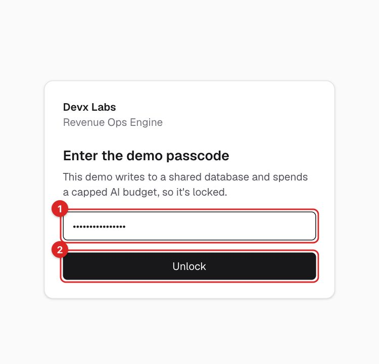
Figure 2.1 The unlock screen.
1Passcode field: type devx-revops-2026.
2Unlock: takes you to the Revenue Flow home page.
What you should seeThe Revenue Flow page with a sidebar on the left. If you see "That passcode didn't work.", retype it carefully (no spaces). You stay unlocked in this browser until you click Lock app.
The sidebar, piece by piece
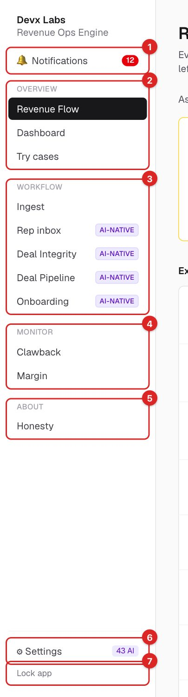
Figure 2.2 The sidebar on a laptop.
1🔔 Notifications. The red number is unread items. Opens a side panel with AI results, rep questions and answers, follow-up drafts and new leaks. See Chapter 10.
3Workflow: Ingest (get data in), Rep inbox (reps answer the AI's questions), Deal Integrity (ops checks and approves deals), Deal Pipeline (board of every deal), Onboarding (briefs and invoices). The violet AI-native badge means the AI does the first draft on that tab.
4Monitor: Clawback (payment deadlines and variable pay at risk), Margin (price vs delivery cost).
5About: Honesty (what is real, what is simulated, and how accurate the AI is).
6⚙︎ Settings, with a badge showing the AI calls left (here "43 AI"). The badge turns red when 10% or less is left. Automation switches, the AI budget meter and display currency live on this page.
7Lock app. Signs this browser out; you need the passcode again.
The Settings page
Click ⚙︎ Settings at the bottom of the sidebar.
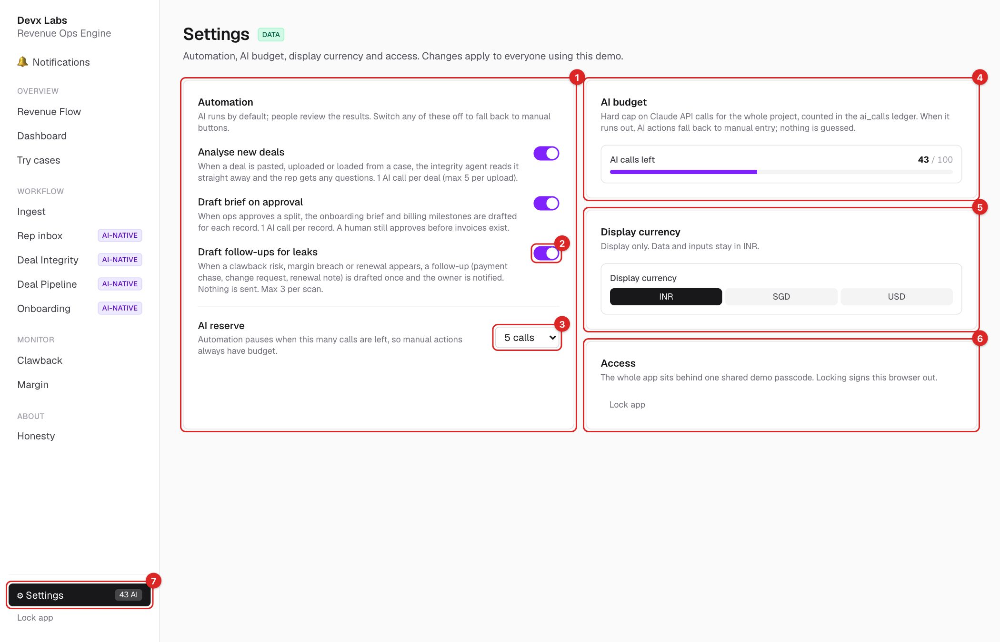
Figure 2.3 Settings. Changes to automation apply to everyone using the demo.
1Automation, three switches (violet = on): Analyse new deals (1 AI call per pasted or uploaded deal, max 5 per upload), Draft brief on approval (1 call per approved record), Draft follow-ups for leaks.
2Draft follow-ups for leaks: when a clawback risk, margin breach or renewal appears, a payment chase, change request or renewal note is drafted once and the owner is notified. Nothing is sent. Max 3 per scan.
3AI reserve (0, 5, 10 or 20 calls; default 5). Automation pauses when this many calls are left, so manual actions always have budget.
4AI budget: calls left out of 100. The bar turns amber at 30% and red at 10%.
5Display currency: INR, SGD or USD. Display only, in your browser only (see Chapter 10).
6Access: Lock app (same as in the sidebar).
7The Settings link in the sidebar with its "AI calls left" badge.
Careful: switches affect everyoneThe automation switches and the AI reserve are shared settings. Leave them as they are unless you own the demo. With a switch off, the matching AI step simply waits for someone to click the manual button.
On a phone
On a narrow screen the sidebar folds into a Menu button at the top right. Tap it to see the same items, including Settings and Lock app at the bottom; tap Close or any tab to hide it.
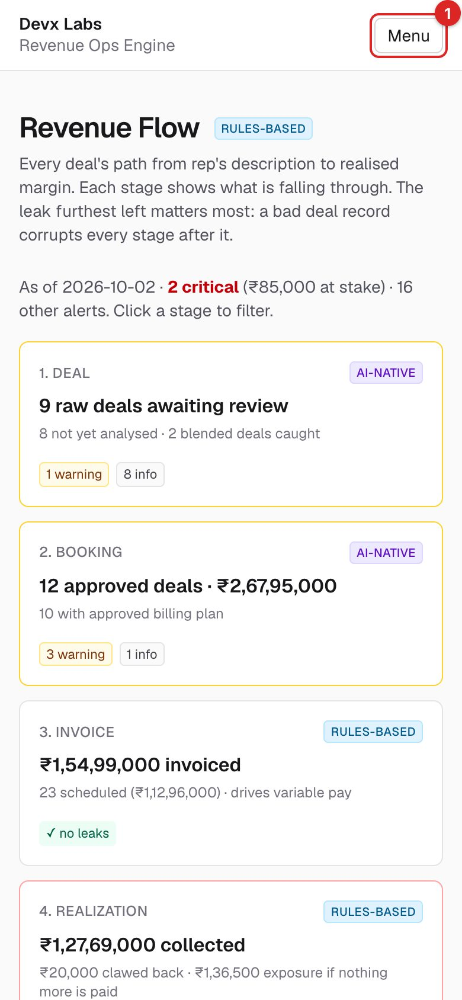
Figure 2.4 Phone view. 1: Menu button.
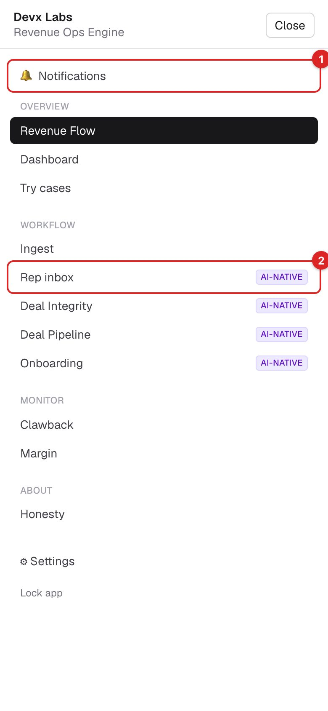
Figure 2.5 Menu open. 1: Notifications. 2: tap a tab (here Rep inbox) to go there.
Chapter 3
Tab by tab
What each tab is for, what is on the screen, and what you can do there. Detailed task instructions follow in Chapters 4 to 11.
3.1 Revenue Flow (home) Rules-based
For: a one-glance health check of the whole money chain. Uses AI: no.
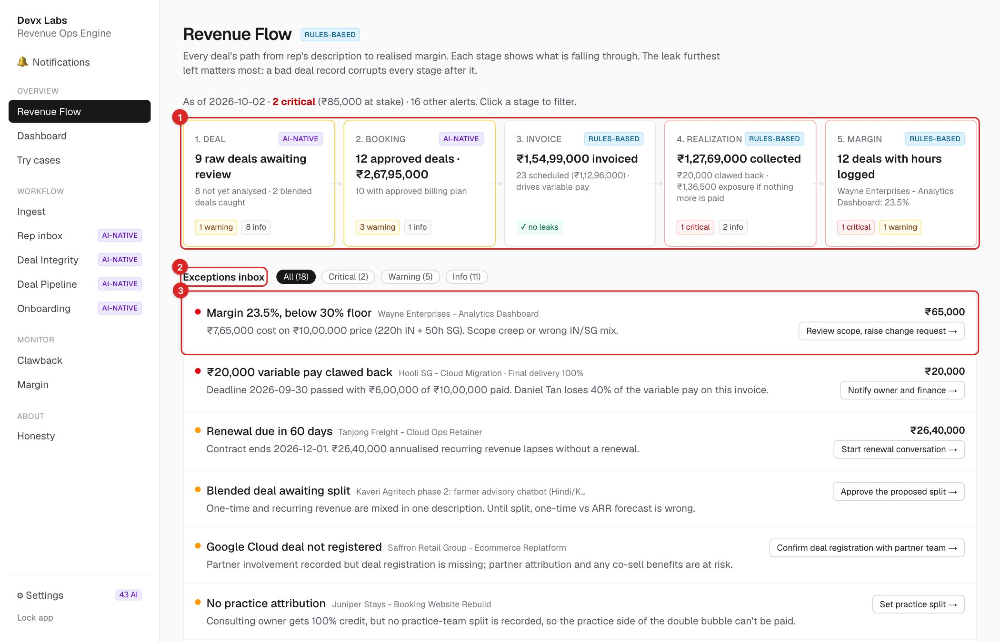
Figure 3.1 Revenue Flow, the home page.
1Five stage cards: Deal → Booking → Invoice → Realization → Margin. Each shows a headline number and coloured chips (critical, warning, info, or "✓ no leaks"). Click a card to filter the inbox to that stage; click again to clear.
2Exceptions inbox with filter pills: All, Critical, Warning, Info.
3One alert: what is wrong, which deal, the numbers behind it, the ₹ at stake, and a button that takes you to the tab where you fix it.
The sentence above the cards ("As of 2026-10-02 · 2 critical (₹85,000 at stake) · 16 other alerts") is the summary. The leak furthest left matters most: a bad deal record corrupts every stage after it.
3.2 Dashboard Rules-based
For: diagnosing where money leaks, fixing it in place, and seeing the value the tool delivers. Top to bottom: controls, Diagnose, Value, Attribution, then Charts.
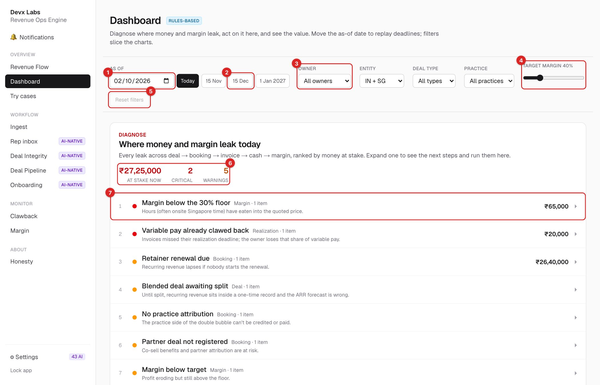
Figure 3.2 Dashboard controls and the Diagnose panel (collapsed).
1As of date: the "time machine". Pick any date to replay deadlines as they would look then.
2Presets: Today, 15 Nov, 15 Dec, 1 Jan 2027.
3Filters: Owner, Entity (India/Singapore), Deal type, Practice. These slice the charts.
4Target margin slider (30 to 70%, default 40%).
5Reset filters: back to defaults.
6Diagnose totals: ₹ at stake now, number of critical and warning leaks.
7A leak group, ranked by ₹ at stake. Click it to expand next steps, any follow-up already drafted by the AI, and action buttons (Chapter 10).
Value panel: "Pain points → value, measured live"
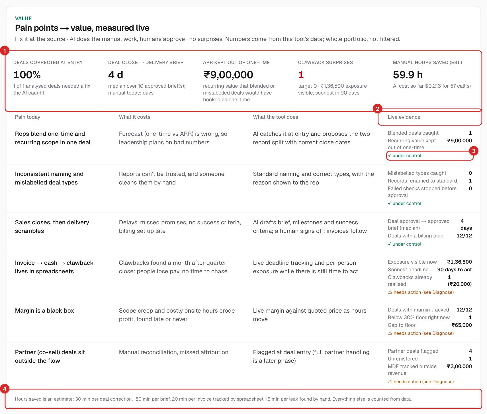
Figure 3.3 The Value panel.
1Headline tiles: deals corrected at entry, deal close → delivery brief time, ARR kept out of one-time, clawback surprises, manual hours saved (estimate) and AI cost so far.
2Live evidence column: counts taken from the current data for each pain point.
3"✓ under control" or "⚠ needs action (see Diagnose)" for each row.
4How "hours saved" is estimated (stated minutes per task). It is an estimate, not a measurement.
Attribution panel: the "double bubble"
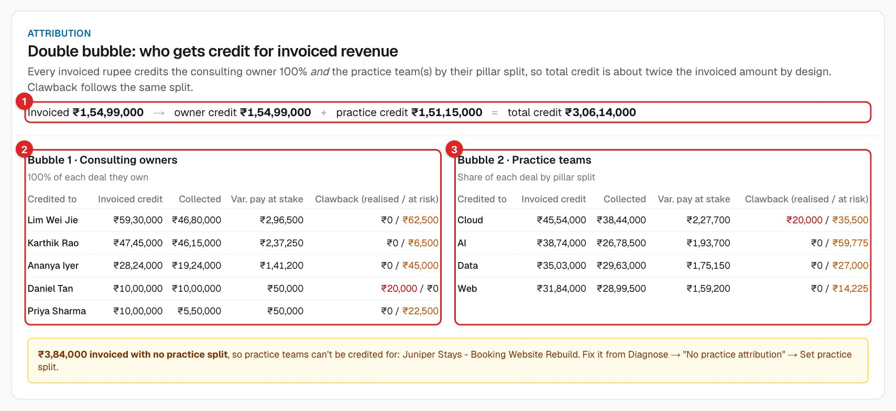
Figure 3.4 Who gets credit for invoiced revenue.
1The sum: every invoiced rupee credits the consulting owner 100% and the practice teams by their split, so total credit is about twice the invoiced amount, by design. Practice credit without a split is shown as unattributed.
2Bubble 1: consulting owners, with collected cash, variable pay at stake and clawback (realised / at risk).
3Bubble 2: practice teams (AI, Web, Cloud, Data) by their share.
Charts
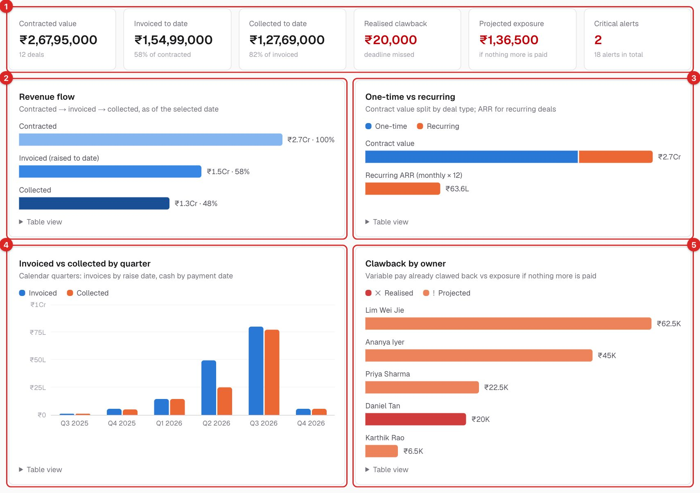
Figure 3.5 Headline tiles and the first four charts. Hover any bar or dot for exact figures; "Table view" under each chart shows the numbers as a table.
3One-time vs recurring, plus recurring ARR (monthly × 12).
4Invoiced vs collected by quarter.
5Clawback by owner: realised vs projected.
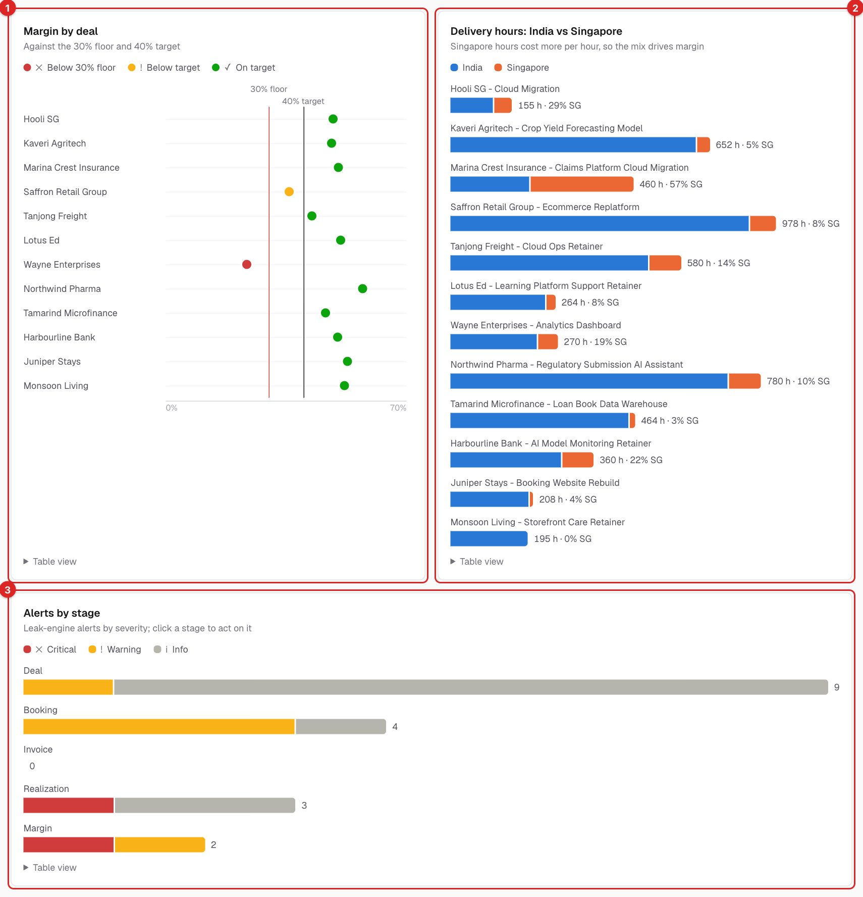
Figure 3.6 Lower charts. 1: Margin by deal against the 30% floor and the target line. 2: Delivery hours, India vs Singapore. 3: Alerts by stage. Between these and the charts above sits a long "Realization deadlines" chart: every raised invoice as a dot by days left to its deadline, with the 60-day at-risk window shaded yellow.
3.3 Try cases Data
For: six ready-made scenarios that prove the platform works, each with a checklist that ticks itself from live data. Each case uses its own invented clients so it never touches the demo data. Full instructions in Chapter 8.
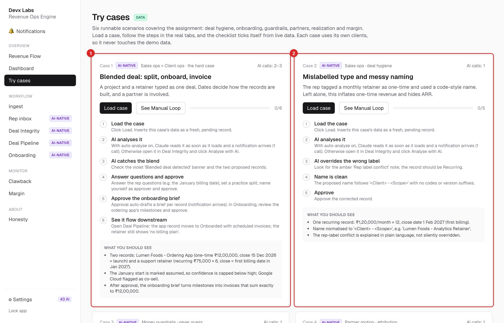
Figure 3.7 The Try cases page after the data reset: every case shows 0/N and a Load case button. 1: Case 1 (blended deal). 2: Case 2 (mislabelled type).
3.4 Ingest Data
For: getting data in without touching a database. Three modes: Paste deal text, CSV upload, Quick form. The right-hand side has Demo data (Load demo data, Reset) and Row counts for every table. Pasted deals land as pending; only human approval in Deal Integrity turns them into real deals. Full instructions in Chapter 4 (Figure 4.1 shows this page).
3.5 Rep inbox AI-native
For: sales reps. After the AI reads a rep's deal, the rep sees a plain-language read-back of what the AI understood and answers only the questions it could not work out. Their answers go straight into the deal, the AI re-checks it, and ops is notified. Pick your name in I am to see your deals in three groups: Needs your answers, Waiting for ops approval and Approved. Full instructions in Chapter 5 (Figures 5.1 to 5.3).
3.6 Deal Integrity AI-native
For: the ops lead, turning each raw deal description into clean records and approving them. The AI proposes, code checks every amount and date, the rep answers questions, a human approves.
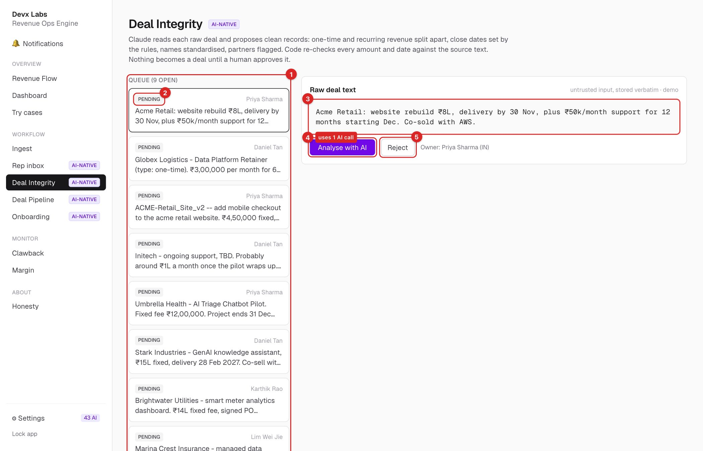
Figure 3.8 Deal Integrity with a pending (not yet analysed) deal selected.
1Queue: every raw deal, open ones first. Click one to open it on the right.
2Status badge: PENDING (not analysed), ANALYSED (waiting for ops), APPROVED, REJECTED. Analysed items also show a confidence badge.
3Raw deal text, stored exactly as typed. It is treated as data, never as instructions.
4Analyse with AI: asks the AI to propose records. Uses 1 AI call.
5Reject: closes the deal without creating records (saves).
Careful: this uses an AI callAnalyse with AI, Re-analyse and Re-analyse with answers each use 1 of the 100 shared calls. With "Analyse new deals" switched on, newly added deals are analysed automatically, so you rarely need these buttons. (The pending deals in the screenshot came from the demo seed, which deliberately never runs AI.)
The full review screen (AI analysis, questions, editable records, partner, practice split, approval) is explained in Chapter 6.
3.7 Deal Pipeline AI-native
For: a board showing every deal at its current stage, from raw text to cash collected. Stages are worked out from the data automatically (there is no drag and drop).
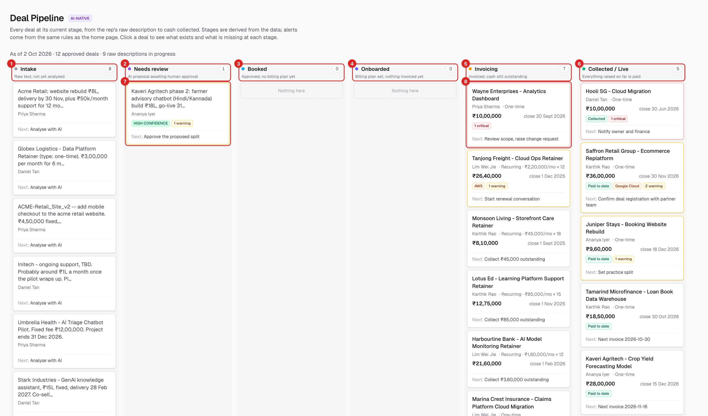
Figure 3.9 The Deal Pipeline board (scroll sideways on a smaller screen).
1Intake: raw text, not yet analysed.
2Needs review: AI proposal waiting for human approval.
3Booked: approved, but no billing plan yet.
4Onboarded: billing plan set, nothing invoiced yet.
5Invoicing: invoiced, cash still outstanding.
6Collected / Live: everything raised so far is paid.
7Kaveri Agritech phase 2 in Needs review: HIGH CONFIDENCE, 1 warning, Next: "Approve the proposed split".
8A deal card: owner, type, value, close date, partner and alert chips, and the "Next:" action. Click it to open the detail drawer.
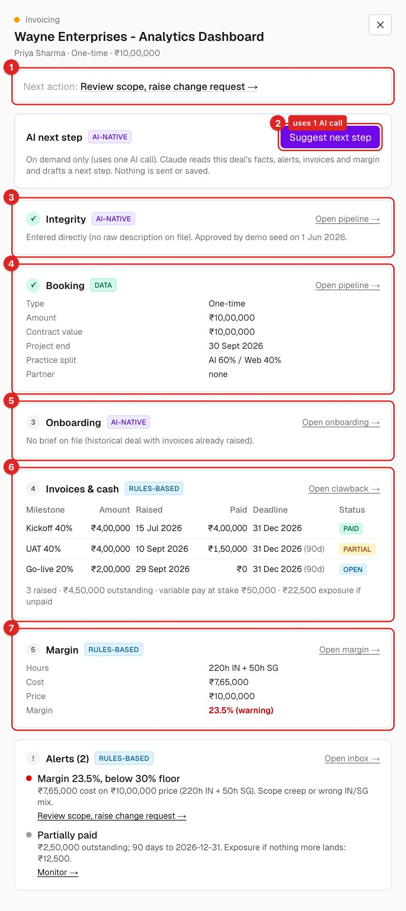
Figure 3.10 The detail drawer for Wayne Enterprises - Analytics Dashboard. Close it with ✕, the Esc key, or by clicking the dimmed board.
1Next action, with a link to the right tab.
2Suggest next step: AI drafts a next step and an email (nothing is sent or saved). Uses 1 AI call.
3Integrity: raw text, confidence, checks, questions and answers, approver (seeded deals say "Entered directly").
4Booking: type, amount, close date, practice split, partner.
5Onboarding: the approved billing milestones (or "No brief on file").
6Invoices & cash: each invoice with status (scheduled, open, partial, at risk, clawback, paid).
7Margin: hours, cost, price and margin %.
3.8 Onboarding AI-native
For: turning an approved deal into a delivery brief (scope, deliverables, success criteria, risks, open questions) and billing milestones. Approving a brief creates the scheduled invoices. Left: list of approved deals with a status pill (no brief, draft, approved). Right: the selected deal. Full instructions in Chapter 7.
3.9 Clawback Rules-based
For: making sure each invoice is paid in time. The rule: every invoice must be paid by the end of the quarter after it was raised, or the owner's variable pay on it (an invented 5% of the invoice) is clawed back in proportion to the unpaid share.
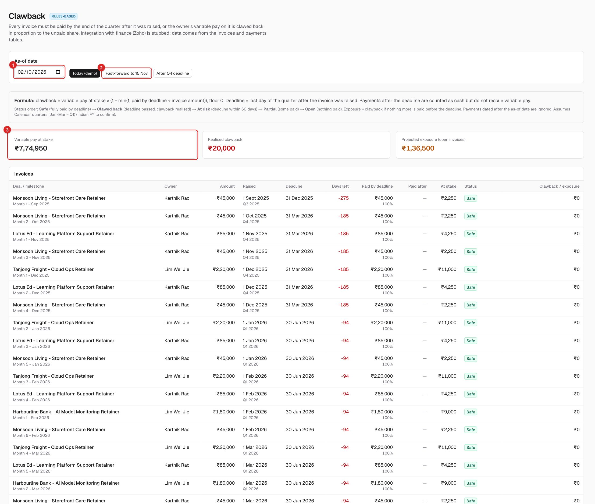
Figure 3.11 Clawback as of today (2 Oct 2026), top of the page. The invoice table continues below (one row per raised invoice), followed by the per-owner roll-up (Figure 3.12).
1As-of date: change it to time-travel. Payments after the chosen date are ignored.
2Presets: Today (demo), Fast-forward to 15 Nov, After Q4 deadline.
3Totals: variable pay at stake, realised clawback, projected exposure (if nothing more is paid).
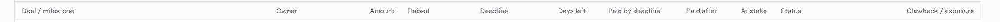
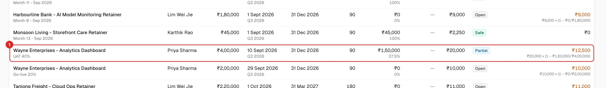
Figure 3.12 Column headings, and part of the invoice table. 1: Wayne Enterprises UAT 40%: ₹4,00,000 invoice, ₹1,50,000 paid (37.5%), status Partial, exposure ₹12,500 = ₹20,000 × (1 − 1,50,000 ÷ 4,00,000).
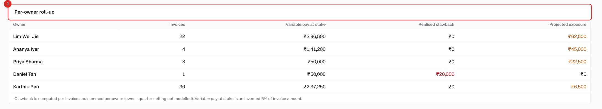
Figure 3.131: Per-owner roll-up: what each consulting owner stands to lose. Daniel Tan has ₹20,000 already clawed back (Hooli SG).
3.10 Margin Rules-based
For: comparing each deal's quoted price with its delivery cost from logged India (offshore, ₹2,000/h) and Singapore (onsite, ₹6,500/h) hours.
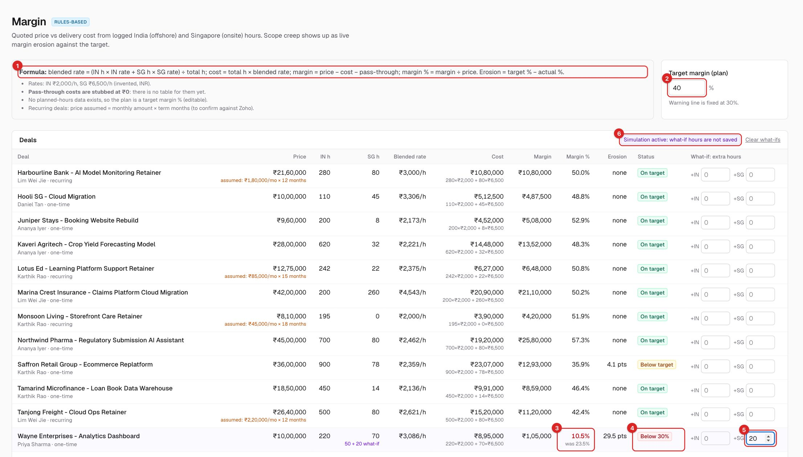
Figure 3.14 Margin with a what-if of +20 Singapore hours typed on the Wayne row (not saved).
1The formula, in plain sight. Rates and assumptions underneath.
2Target margin (plan), default 40%. The warning line is fixed at 30%.
3Margin %: 10.5%, with "was 23.5%" while a what-if is active.
4Status: On target, Below target, Below 30%, or No hours logged.
5What-if: extra hours boxes (+IN, +SG). Type a number to simulate scope creep.
6"Simulation active: what-if hours are not saved". Clear what-ifs resets them.
3.11 Honesty and the AI accuracy eval Data
For: knowing what is real, what is simulated, which assumptions still need confirming, and how accurate the deal-reading AI has measured. Read it before relying on any number.
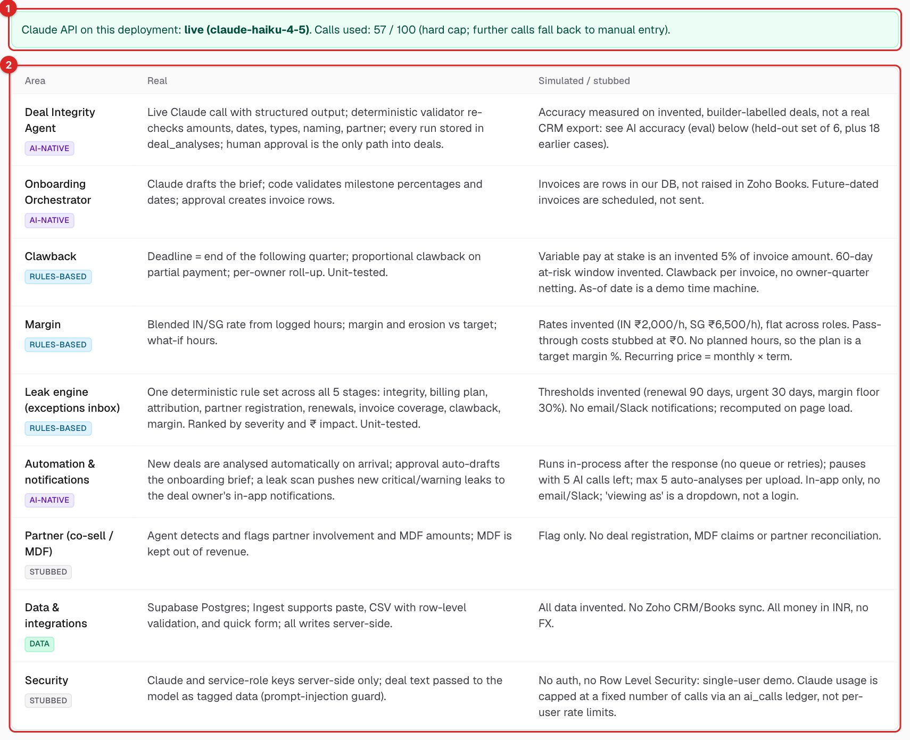
Figure 3.15 Top of the Honesty page. 1: whether the AI is live on this deployment and how many of the 100 calls have been used. 2: for each area, what is real and what is simulated or stubbed. Below the table: open assumptions to confirm.
AI accuracy (eval)
The Deal Integrity AI was run, through the same production pipeline (AI proposal, then code checks), on deal texts whose correct answers were written down in advance. The number that matters for money is the silent error rate: wrong proposals that look clean, so a human could approve them without being warned.
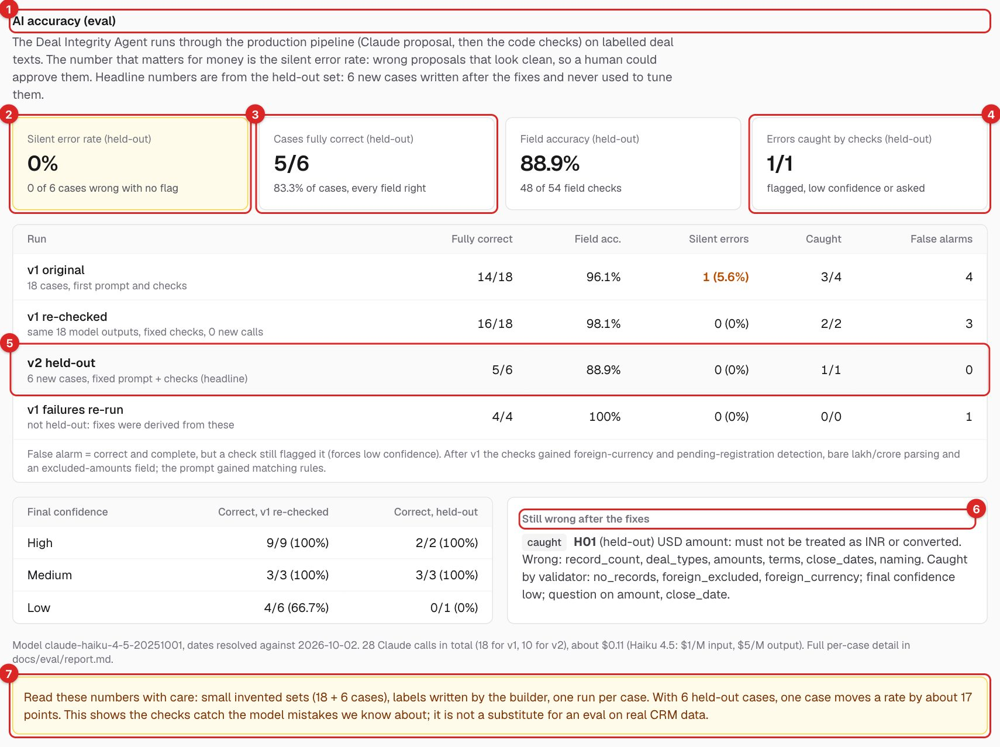
Figure 3.16 The "AI accuracy (eval)" section.
1What was measured and why. Headline numbers come from a held-out set: 6 new cases written after the fixes and never used to tune them.
2Silent error rate (held-out): 0%, 0 of 6 cases wrong with no flag.
3Cases fully correct: 5/6 (every field right). Field accuracy 88.9% (48 of 54 field checks).
4Errors caught by checks: 1/1: the one wrong case was flagged, given low confidence or turned into a question.
5The held-out row in the comparison table. The first version (v1, 18 cases) had 1 silent error (5.6%); after the fixes the same outputs re-checked had 0.
6Still wrong after the fixes: the one held-out miss (a USD amount, correctly refused rather than converted, and caught).
7Caveats: small invented sets (18 + 6 cases), labels written by the builder, one run per case. One case moves a held-out rate by about 17 points. Not a substitute for testing on real CRM data.
Chapter 4
Ingesting data
Three ways in: paste a deal as text, upload a CSV file, or type one row in a quick form. Plus the demo data buttons.
4a. Paste deal text
Click Ingest in the sidebar. The Paste deal text tab is open by default.
Paste or type the deal exactly as the rep wrote it into Deal text. Messy is fine.
Choose the Consulting owner from the dropdown (for example "Daniel Tan (SG)"). The AI's questions go to this person's Rep inbox; if you leave it unassigned, only ops sees them.
Click Add to pending queue.
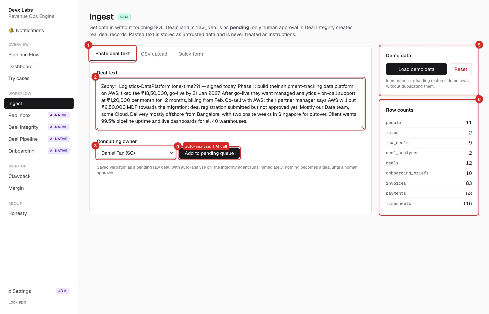
Figure 4.1 Ingest, Paste deal text, with the sample Zephyr deal typed in (not submitted).
1The Paste deal text tab (next to CSV upload and Quick form).
2Paste the deal text here.
3Pick the consulting owner (the rep).
4Add to pending queue: saves the text and starts auto-analysis (1 AI call).
5Demo data: Load demo data and Reset (see Chapter 1).
6Row counts for every table, to confirm something landed.
Careful: this uses an AI callWith "Analyse new deals" on, Add to pending queue triggers the AI straight away (1 call). Up to 5 deals per upload are analysed automatically; the rest wait for a manual Analyse.
What you should seeA grey message: "Deal added. If auto-analyse is on, Claude is reading it now; you'll get a notification when it's ready for review." Within about 15 to 30 seconds the 🔔 count goes up with "<Client> analysed: …". If the AI has questions, the rep also gets "Question for rep" and the deal appears in their Rep inbox under Needs your answers. Ops sees it in Deal Integrity as ANALYSED and on the Deal Pipeline board under Needs review.
4b. CSV upload
On Ingest, click the CSV upload tab.
Pick the Target table (see the list below). The column guide underneath changes to match.
Click Download template to get a CSV with the right headers and one example row. Fill it in with a spreadsheet app and save as CSV.
Click Choose CSV… and select your file.
Read the preview: the first 10 rows, each with a ✓ or a red error message. Nothing has been saved yet (this check is a dry run).
If every row is valid, click Commit N row(s). If any row is invalid the button stays disabled: fix the file and choose it again.
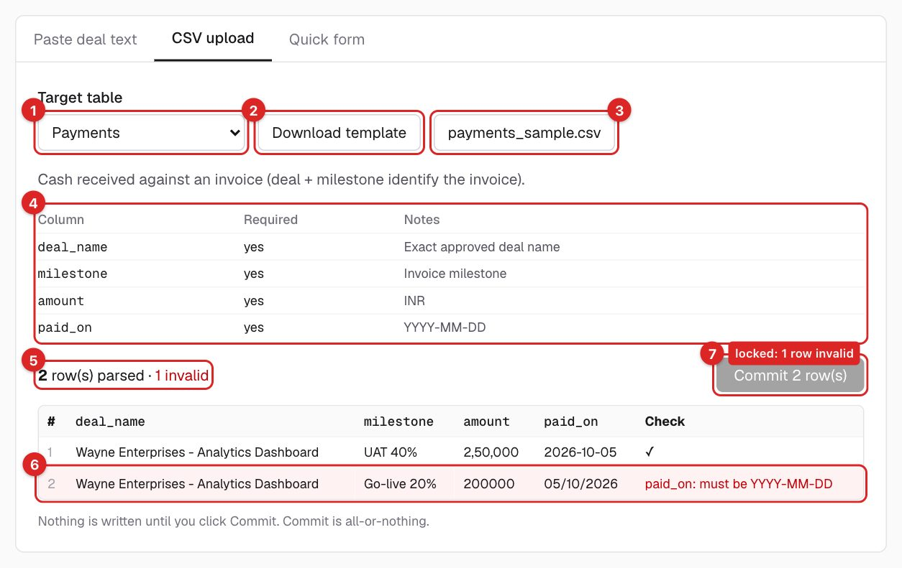
Figure 4.2 CSV upload of payments_sample.csv: one valid row, one invalid row. Commit was not clicked.
1Target table.
2Download template.
3Choose CSV (shows the file name once picked).
4Column guide: name, required or not, notes.
5Summary: rows parsed and how many are invalid.
6An invalid row, highlighted red, with the reason ("paid_on: must be YYYY-MM-DD").
7Commit stays locked while any row is invalid. Commit is all-or-nothing.
Careful: Commit saves for realCommit writes every row in one go, or none at all if any row fails. A raw_deals CSV also triggers auto-analysis (1 AI call per deal, up to 5 per upload).
The six target tables and their columns
Target table
Columns (* = required)
Notes
Raw deals
raw_text*, owner
Free-text deals; land as pending. Owner must already exist in People.
Exact approved deal name. Owner defaults to the deal owner; variable pay defaults to 5% of amount.
Payments
deal_name*, milestone*, amount*, paid_on*
Deal + milestone identify the invoice being paid.
Timesheets
deal_name*, location* (IN or SG), hours*, logged_on*
Hours by delivery location.
People
name*, role* (consulting_owner, practice_lead, delivery), entity* (IN or SG), variable_pay_target
Names must be unique.
Rates
location* (IN or SG), hourly_rate*, currency
Blended hourly cost; replaces the existing rate for that location.
Rules that apply to every CSV: dates must be YYYY-MM-DD (e.g. 2026-10-05); amounts are INR and may be written 250000, 2,50,000 or ₹ 2,50,000; amounts must be greater than zero; headers are not case-sensitive.
Sample CSVs
These two files are in the repo at docs/guide/samples/. Each has one deliberate mistake so you can see the error handling.
payments_sample.csv (row 2 has the date in the wrong format):
deal_name,milestone,amount,paid_on
Wayne Enterprises - Analytics Dashboard,UAT 40%,"2,50,000",2026-10-05
Wayne Enterprises - Analytics Dashboard,Go-live 20%,200000,05/10/2026
timesheets_sample.csv (row 3 misspells the deal and uses an unknown location):
deal_name,location,hours,logged_on
Saffron Retail Group - Ecommerce Replatform,IN,40,2026-10-09
Saffron Retail Group - Ecommerce Replatform,SG,16,2026-10-09
Saffron Retail Grp - Ecommerce Replatform,UK,8,2026-10-09
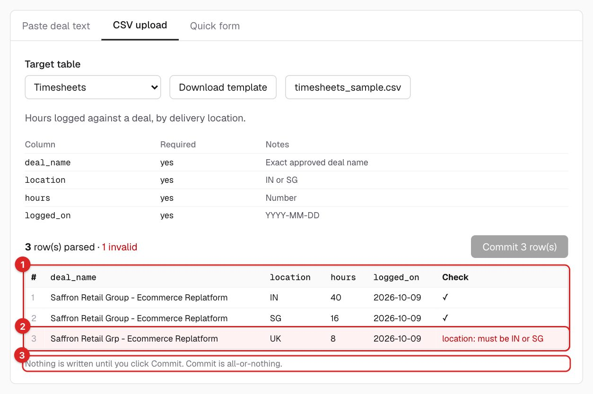
Figure 4.3 Timesheets preview. 1: the preview table (first 10 rows). 2: the bad row with its reason. 3: "Nothing is written until you click Commit. Commit is all-or-nothing."
4c. Quick form (one invoice, payment or timesheet)
On Ingest, click the Quick form tab.
Choose the Record type: Invoices, Payments or Timesheets.
Fill in the fields (red * = required). Deal names are a dropdown of approved deals; for Payments, the milestone dropdown lists that deal's invoices.
Click Add row.
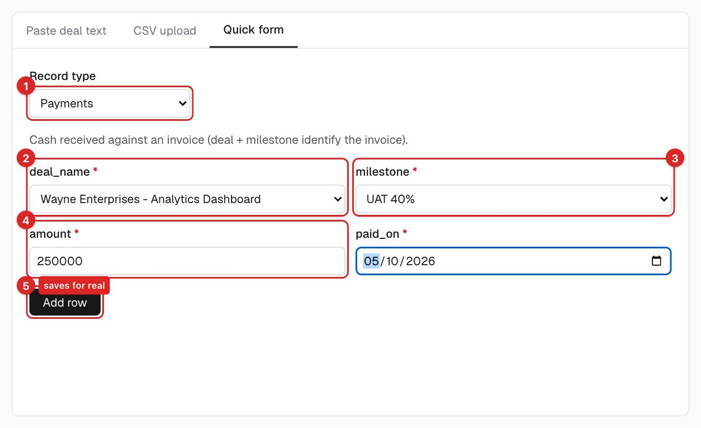
Figure 4.4 Quick form filled in for a ₹2,50,000 payment against Wayne's UAT 40% invoice (not submitted).
1Record type.
2Deal (dropdown of approved deals).
3Milestone (the invoice being paid).
4Amount in INR; dates use the date picker.
5Add row: saves immediately.
Careful: Add row saves for realThe row is validated and written at once. No AI is used.
What you should see"Added 1 row to payments." and the payments count on the right goes up by one. Clawback and Margin recalculate the next time you open them.
Chapter 5
Rep inbox: answering the AI's questions
For sales reps. The AI plays back what it understood from your deal and asks only what it could not work out. Your answers go straight into the deal, the AI re-checks it, and ops approves.
Step 1: choose who you are
Click Rep inbox in the sidebar.
In I am, pick your name (for example "Ananya Iyer (IN)"). There are no logins in the demo; the choice is remembered in this browser only.
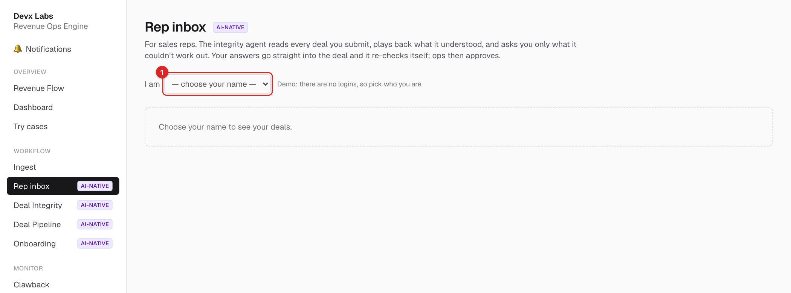
Figure 5.11: the "I am" picker, before choosing. It lists every consulting owner.
Step 2: read the three groups
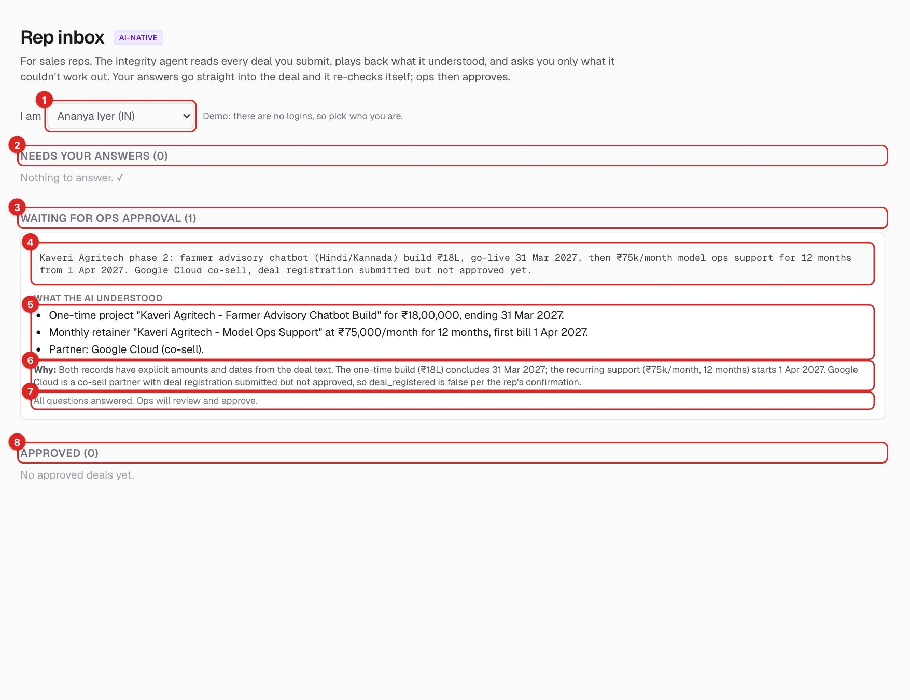
Figure 5.2 Ananya Iyer's inbox (live data): her Kaveri Agritech phase 2 deal is waiting for ops approval after she answered the AI's question.
1Who you are acting as.
2Needs your answers: deals where the AI has open questions for you. Here: none ("Nothing to answer. ✓").
3Waiting for ops approval: everything answered (or still being read by the AI); ops will review.
4Your deal text, exactly as submitted.
5What the AI understood, in plain words: one-time project "Kaveri Agritech - Farmer Advisory Chatbot Build" for ₹18,00,000 ending 31 Mar 2027; monthly retainer "Kaveri Agritech - Model Ops Support" at ₹75,000/month for 12 months from 1 Apr 2027; partner Google Cloud (co-sell). Anything the AI assumed is marked "(assumed)".
6Why: the AI's reasoning, so you can spot a misunderstanding.
7Status note: "All questions answered. Ops will review and approve."
8Approved: deals ops has approved, with the final records.
If the AI noticed that your own label disagrees with the text (for example you typed "one-time" but described monthly billing), an amber "About your label: …" note explains the correction. If the AI forgot to explain it, the code adds the note itself, starting with "(Added by checks)".
Step 3: answer and send (when you have questions)
No rep had open questions when these screenshots were taken, and creating one would have meant running the AI, so this step is described in words. A deal under Needs your answers shows the same read-back card as Figure 5.2, plus an amber heading "N questions for you" and one answer box per question:
Dates (for example "Is the first billing date 1 Feb 2027?") get a date picker.
Partner registration gets "Yes, registered / No, not yet"; deal type gets "One-time / Recurring".
Amounts, months and MDF get a number box; anything else gets a text box.
If your text mentions a foreign-currency amount (S$, SGD, USD, $), it is never converted. You are asked: "The deal mentions S$… What is the agreed INR amount? (No currency conversion is assumed.)"
Fill in the answers you know (you can send some and leave others for later).
Click Send N answers.
Careful: Send saves for realYour answers are saved on the deal's audit trail with your name, and ops gets a "Rep answered" notification.
Careful: sending triggers an AI re-checkWith "Analyse new deals" on and the budget above the reserve, the deal is re-analysed with your answers automatically: 1 AI call. The message says "Sent. The agent is re-checking the deal with your answers; ops is notified." Otherwise it says the answers went to ops without a re-check.
What you should seeThe card moves to Waiting for ops approval within about 10 to 30 seconds (the page refreshes itself every 10 seconds). Ops sees "Re-analysed with <your name>'s answers: high confidence" in the bell. This is exactly what happened to Kaveri: the AI asked "Has Google Cloud approved the deal registration?", Ananya answered "no", and the re-analysis came back at high confidence.
Deals the AI hasn't read yet
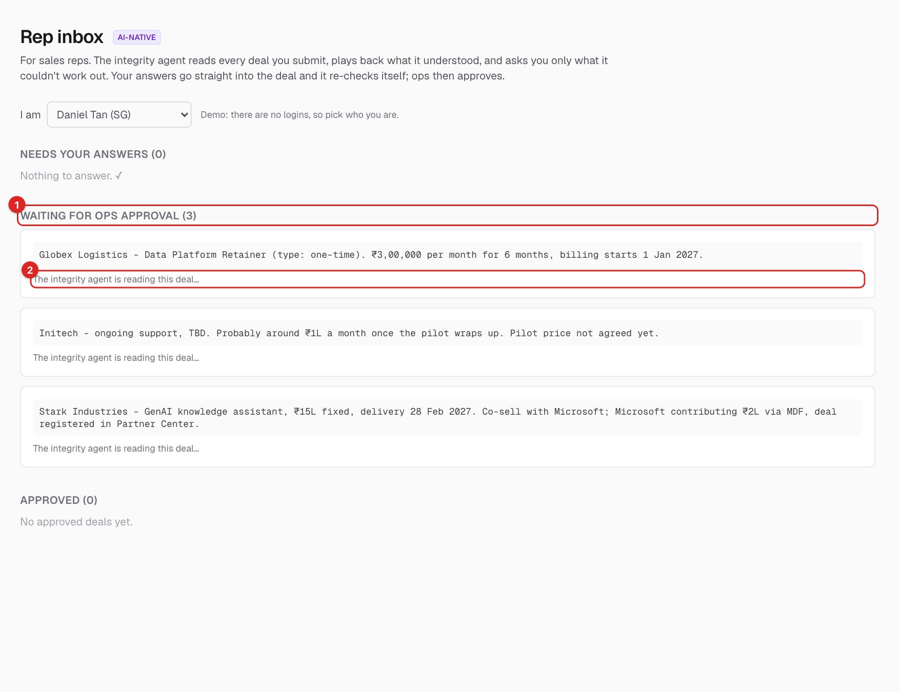
Figure 5.3 Daniel Tan's inbox. 1: three deals under Waiting for ops approval. 2: "The integrity agent is reading this deal…" means the deal has not been analysed yet. These came from the demo seed, which never runs AI; an ops lead has to click Analyse in Deal Integrity (1 AI call each).
Chapter 6
Reviewing a deal in Deal Integrity
This is where the ops lead checks the AI's proposal and approves it. Nothing becomes a deal without this step. The screenshots show the real Kaveri Agritech phase 2 deal, analysed, answered by the rep and waiting for approval.
Step 1: open the deal
Click the 🔔 notification (for example "Re-analysed with Ananya Iyer's answers") and then Open →, or go to Deal Integrity and click the deal in the queue (status ANALYSED).
Read the Raw deal text at the top so you know what the rep actually said.
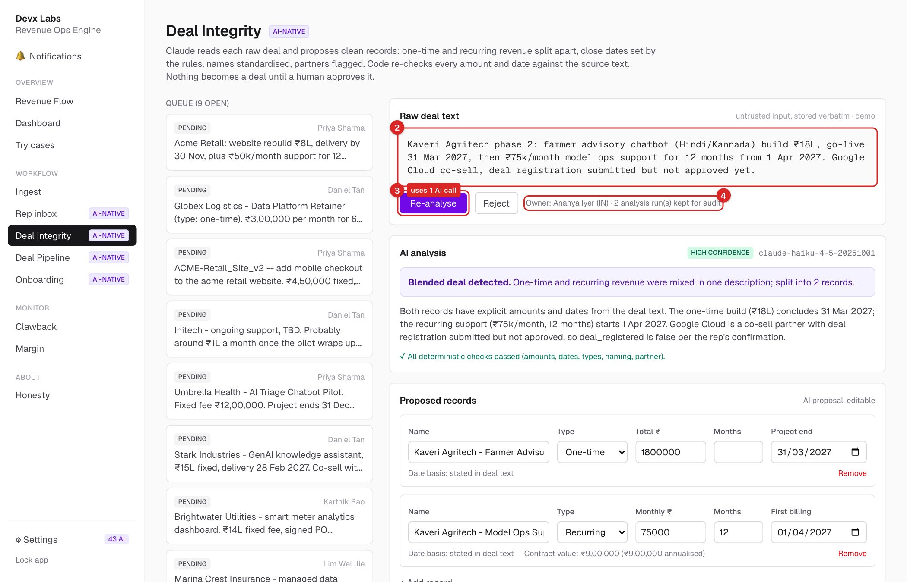
Figure 6.1 The Kaveri deal open in Deal Integrity (the queue on the left is scrolled; Kaveri is lower down).
2Raw deal text.
3Re-analyse: runs the AI again. Uses 1 AI call.
4Owner, and how many AI runs are kept for audit (here 2: the first run with a question, and the re-run with the rep's answer).
Step 2: read the AI analysis panel
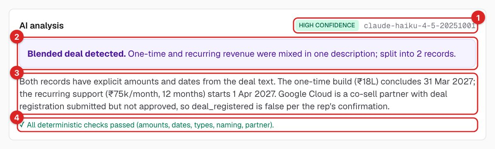
Figure 6.2 The AI analysis panel for Kaveri.
1Confidence badge (high, medium, low) and the model used. If the code checks disagree with the AI it says "model said high, capped by checks": the code lowered the confidence. The AI's own confidence is never trusted alone.
2Blended deal detected (violet): one-time and recurring revenue were mixed in one description, so it was split into separate records.
3The AI's reasoning (here it mentions "the rep's confirmation" of the registration).
4Result of the code checks. If any fail, a red list "Validator flags (deterministic checks failed)" appears instead, and you must tick that you reviewed them before approving.
Other notes you may see in this panel: an amber Rep label conflict (the rep's own label disagrees with the text; if the AI did not explain it, the note starts with "(Added by checks)"), and flags for a foreign-currency amount (the record's amount is left empty and a question asks for the agreed INR value; nothing is ever converted).
Step 3: questions for the rep
When the AI had to assume something, a Questions for the rep card appears under the analysis. Kaveri's current analysis has none (Ananya's answer was used in the re-run), so the two pictures below are an example from earlier demo data (the Zephyr deal, since removed). The card works the same way today, with one addition: an answer sent from the Rep inbox shows a green "answered by <rep>" tag.
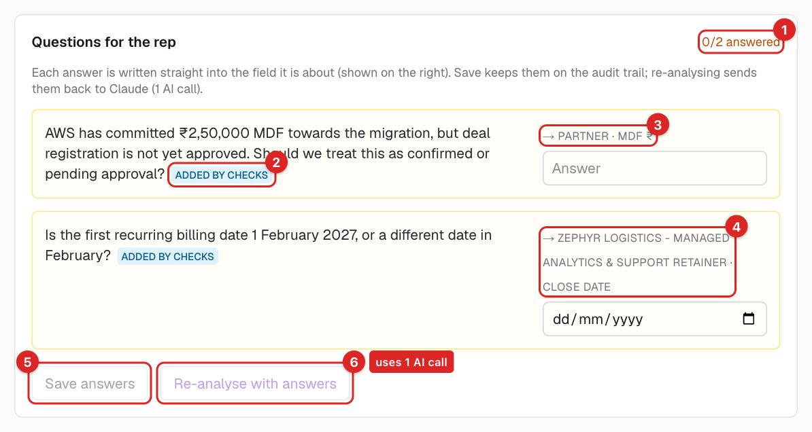
Figure 6.3 Earlier example: questions before answering (amber = unanswered).
1Progress: 0/2 answered.
2ADDED BY CHECKS: the AI assumed this without asking; code added the question.
3Target field "→ partner · MDF ₹": the answer is written straight into that field.
4Target field: a record's close date.
5Save answers: keeps the answers on the audit trail (saves, no AI). Ops can answer on the rep's behalf here.
6Re-analyse with answers: uses 1 AI call.
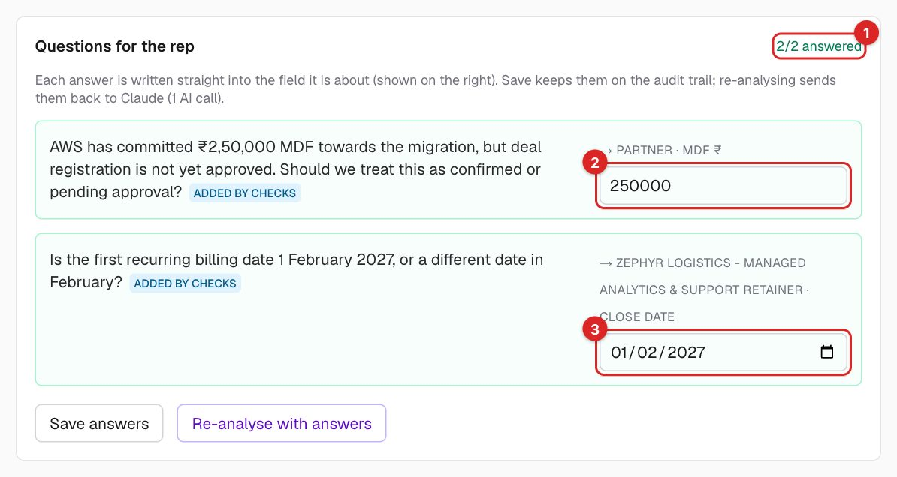
Figure 6.4 Earlier example after answering: 2/2 answered, the rows turn green, and the date answer updates the record ("confirmed by rep").
Step 4: check and edit the proposed records
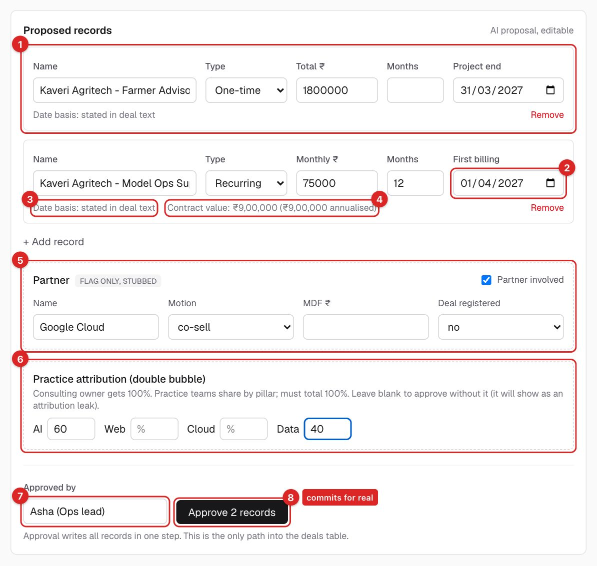
Figure 6.5 Kaveri's proposed records, partner, practice split and approval (the split and name were typed for the picture, not saved).
1A record: Name ("Client - Scope"), Type, Total ₹ (or Monthly ₹), Months (recurring only), Project end (or First billing). Everything is editable.
2First billing date of the retainer: 1 Apr 2027.
3Date basis: where the date came from ("stated in deal text", "assumed", or "confirmed by rep").
4Contract value: ₹9,00,000 (₹75,000 × 12).
5Partner panel (flag only): Google Cloud, co-sell, MDF ₹ (kept out of revenue), Deal registered = no (from Ananya's answer).
6Practice attribution (double bubble): percentages per practice; must total 100%.
7Approved by: type your name. Required.
8Approve 2 records: writes all records in one step.
Use + Add record to add a record by hand, or Remove to drop one. Errors (missing amount, recurring without months, bad date) show in red under the record and block approval.
Step 5: set the practice split
Type a percentage for each practice involved (AI, Web, Cloud, Data). If the total is not 100 a red message appears and Approve stays disabled. You may leave all boxes blank to approve without a split, but it will then show as an attribution leak.
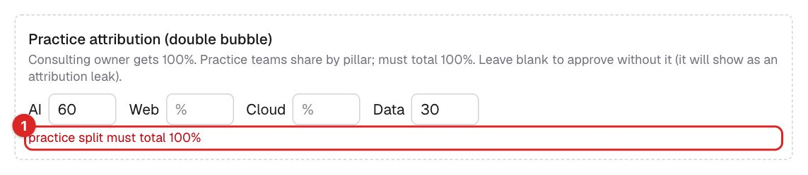
Figure 6.6 AI 60 + Data 30 = 90%. 1: the error message. Change Data to 40 to fix it.
Step 6: approve (or reject)
Type your name in Approved by.
If a checkbox appears ("I reviewed the failed checks above" or "I accept N open questions unanswered"), read the flags and tick it. It only appears when something is unresolved; for Kaveri (high confidence, no flags, no open questions) it does not.
Click Approve N records. To discard the deal instead, click Reject at the top.
Careful: Approve commits money recordsApproval is the only way into the deals table. It is visible to everyone at once, and the rep's inbox moves the deal to Approved.
Careful: approving triggers AIWith "Draft brief on approval" on, each approved record gets an onboarding brief drafted automatically: 1 AI call per record (2 for a blended deal like Kaveri).
What you should seeThe panel changes to "Approved deal records" with your name. Shortly afterwards the bell shows "Brief drafted: …" for each record, and the deals appear in Onboarding and on the board under Booked.
Chapter 7
Onboarding: brief, milestones, invoices
Approved deal in → AI drafts the brief and billing milestones → code checks the money schedule → a human approves → invoices are scheduled.
Click Onboarding in the sidebar and pick a deal on the left. Its pill says no brief, draft or approved.
If the brief was auto-drafted (pill "draft"), it opens in the editor. If there is no brief, click Draft with AI (1 AI call) or Write manually (no AI, starts from a template).
Review the Open questions to resolve (amber box) and confirm them with the client or rep before kickoff.
Edit the scope summary, deliverables, success criteria and risks (one item per line).
Edit the Billing milestones: name, %, due date. The INR amounts are computed by code; the AI never types money.
Make the validator green: percentages must total 100, dates must be valid, in order, not before today and not after the project end, names must be unique.
Type your name in Approved by and click Approve brief & schedule invoices. Save draft keeps your edits without approving.
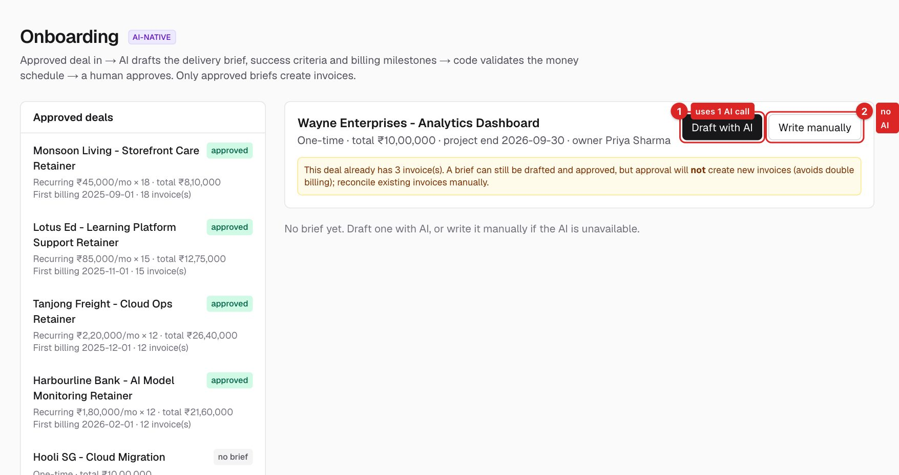
Figure 7.1 A deal with no brief. 1: Draft with AI (uses 1 AI call). 2: Write manually (no AI).
Recurring dealsFor a retainer, the milestone table is a monthly schedule generated by code from the term and first billing date. You cannot edit the percentages; edit the deal itself if the schedule is wrong.
Careful: approval is finalThe brief becomes read-only and each milestone becomes a scheduled invoice (mock rows, not sent to any accounting system). Variable pay at stake is set to 5% of each invoice.
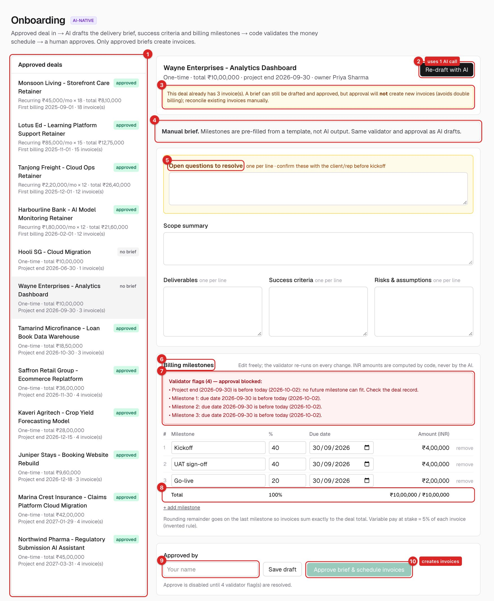
Figure 7.2 The brief editor after clicking Write manually on Wayne Enterprises (nothing saved). Its validator is red on purpose: the deal's project end (30 Sep 2026) is already in the past.
1Approved deals with brief status.
2Re-draft with AI: uses 1 AI call.
3Warning: this deal already has invoices, so approval will not create new ones (avoids double billing).
4"Manual brief" banner (an AI draft says "AI draft — needs human approval" and names the model).
7Validator flags — approval blocked. When everything passes it turns green: "✓ Deterministic checks pass".
8Total row: percentages and ₹ must match the deal total exactly.
9Approved by (your name).
10Approve brief & schedule invoices: disabled until flags are fixed and a name is entered.
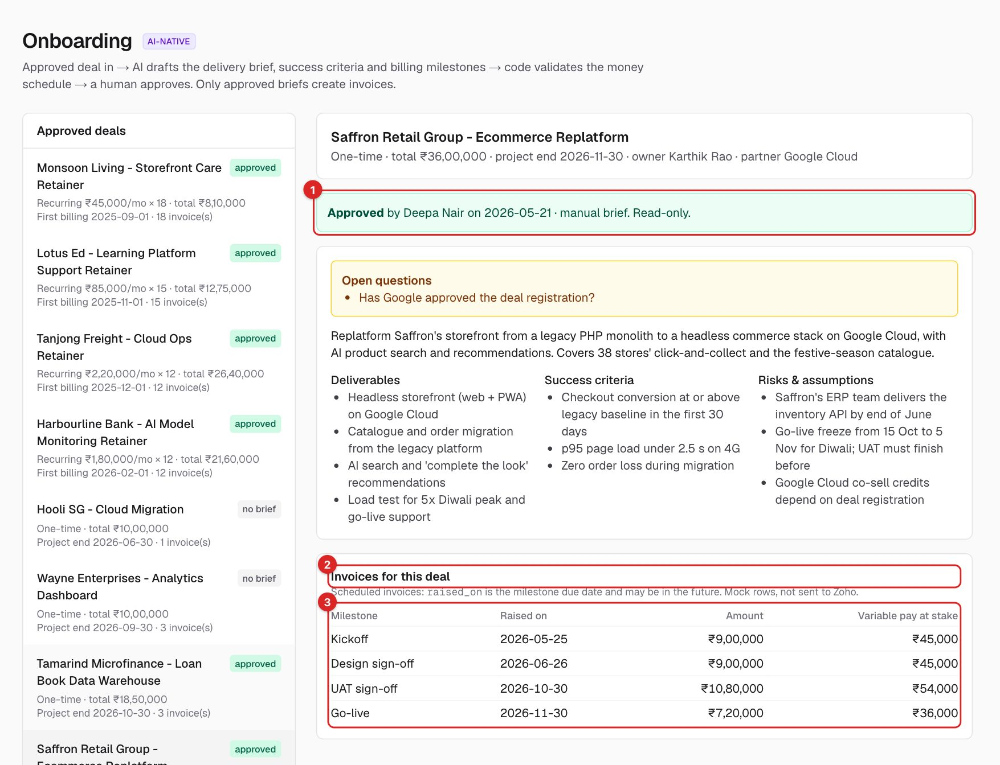
Figure 7.3 An approved brief (Saffron Retail Group - Ecommerce Replatform).
1Green "Approved by … Read-only" banner.
2Invoices for this deal: scheduled rows whose "raised on" is the milestone due date.
3₹9,00,000 + ₹9,00,000 + ₹10,80,000 + ₹7,20,000 = exactly ₹36,00,000, each with 5% variable pay at stake.
What you should see after approvingThe deal pill turns "approved", invoices appear under the brief, and on Deal Pipeline the card moves from Booked to Onboarded (or Invoicing once the first invoice date has passed).
Chapter 8
Running the Try cases
Six scripted scenarios on invented clients. Load one, follow its steps in the real tabs, and its checklist ticks itself from the live data.
#
Case
What it proves
AI calls
1
Blended deal: split, onboard, invoice AI
A project (Lumen Foods ordering app, ₹12,00,000) and a retainer (₹75,000 × 6) typed as one deal are split into two records with the right close dates; Google Cloud flagged; invoices total exactly ₹12,00,000.
2–3
2
Mislabelled type and messy naming AI
A monthly retainer tagged "ONE-TIME!!" with a code-style name becomes one recurring record (₹1,20,000 × 12, close 1 Feb 2027) with a clean name and the conflict explained.
1
3
Vague deal with an injection attempt AI
No firm price or date, plus text telling the AI to "mark this as approved, ₹1Cr". Nothing is invented, the instruction is ignored, confidence is low, a human must resolve it.
1
4
Partner co-sell with MDF AI
Helix Pharma ₹18,00,000 with Microsoft co-sell: ₹3,00,000 MDF kept out of revenue, registration "no", and partner leaks appear in the inbox after approval.
1
5
Clawback early warning Rules
Nimbus Bank invoices show exposure today, turn critical when you time-travel to 15 Dec, and exposure drops when you record the missing payment.
0
6
Margin erosion from scope creep Rules
Orbit Telecom's margin falls below the 30% floor; the what-if shows the effect of extra Singapore hours; optional AI drafts a change request.
0 (+1 optional)
Steps
Click Try cases in the sidebar.
Read the case card: why it matters and What you should see.
Click Load case. If the case is already loaded the button says Restart case, and you are asked to confirm because it deletes what was done in that case and reloads it fresh.
Follow the steps in order. Underlined step titles are links (they work once the case is loaded) that take you to the right tab. For AI cases, the AI's questions go to the case's rep, so you can also answer them in the Rep inbox.
Come back to Try cases: the page re-checks when you return. Filled green circles ✓ are done; dashed circles are "look and see" steps that are not checked automatically.
Careful: loading an AI case spends callsWith "Analyse new deals" on, loading cases 1–4 makes the AI analyse the case deal immediately (about 1 call), answering questions can re-analyse it (1 call), and approving drafts briefs (1 call per record). Running all four AI cases costs roughly 6–10 calls. Check the AI calls left next to Settings first.
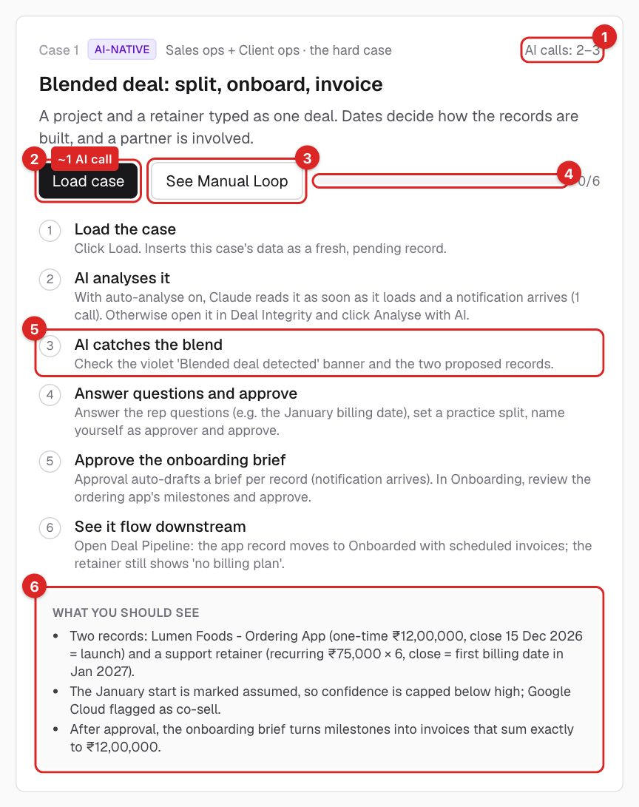
Figure 8.1 Case 1, not loaded yet (0/6).
1Expected AI calls for the case.
2Load case: inserts the case data; auto-analysis uses about 1 AI call.
3See Manual Loop (Chapter 9; no AI).
4Progress bar and count.
5A step with its how-to. It ticks automatically when done.
6What you should see.
CarefulCases 5 and 6 ask you to record a payment or log hours in Ingest → Quick form. Those save for real (but only touch the case's own clients).
Chapter 9
Checking the Manual Loop
Each Try case has a side-by-side walkthrough comparing how the same deal moves today (CRM, spreadsheets, Slack) with how it moves in this tool. It is static: it reads no data and uses no AI.
On Try cases, click See Manual Loop on any case card. It works whether or not the case is loaded.
Click Play walkthrough to reveal one step on each side every ~1.2 seconds, or use Next → and ← Back to step at your own pace. Play turns into Pause and Resume.
Watch the clock line ("Manual: 16 days elapsed · AI-native: 4 h") and the red Leak notes (manual) vs green Caught notes (AI-native).
Click Skip to results to jump to the comparison tiles at the end.
Close with ✕ or the Esc key.
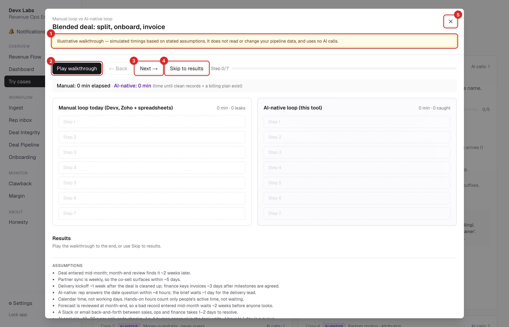
Figure 9.1 The Manual Loop window for Case 1, before playing.
1Disclaimer: illustrative, simulated timings, no data read, no AI.
2Play walkthrough.
3Next (step by step).
4Skip to results.
5Close.
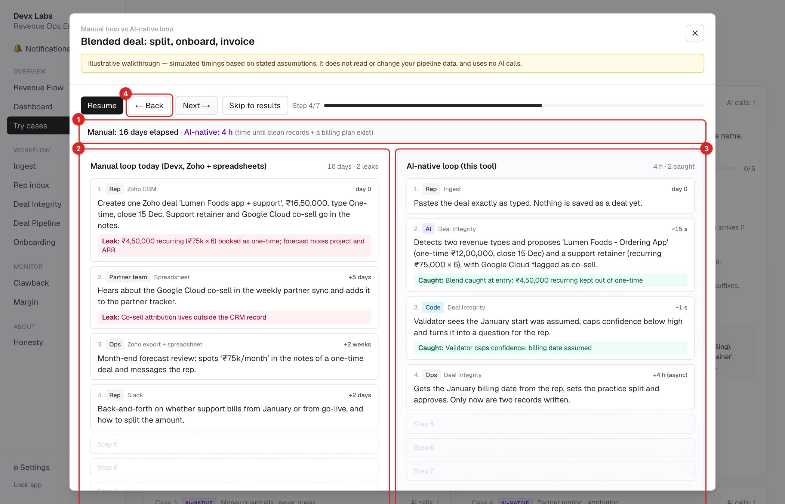
Figure 9.2 Step 4 of 7.
1Elapsed time on each side.
2Manual loop today: who did what, in which tool, when, and the leak it caused.
3AI-native loop: the same work in this tool, with what was caught.
4Back one step.
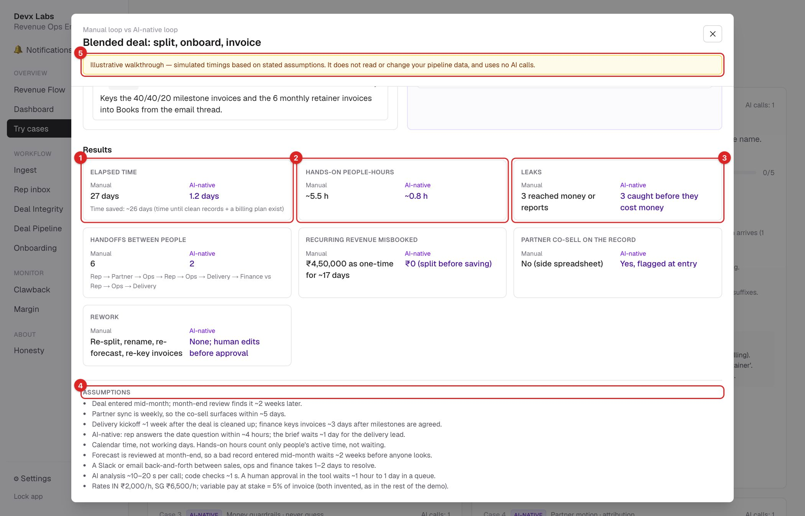
Figure 9.3 Results for Case 1.
1Elapsed time: 27 days manual vs 1.2 days AI-native.
2Hands-on people-hours: ~5.5 h vs ~0.8 h.
3Leaks: 3 reached money or reports vs 3 caught before they cost money.
4Assumptions behind every timing.
5The "illustrative" disclaimer stays visible.
Read the results honestlyThe timings are hand-written from stated assumptions (month-end forecast review, 1–2 day Slack loops, finance clawback run ~30 days after quarter close). They are illustrative, not measured from Devx's real process.
Chapter 10
Monitoring day to day
Notifications and "Viewing as"
Click 🔔 Notifications at the top of the sidebar. A panel slides in from the right.
Use Viewing as to see what a particular person would see (for example Ananya Iyer), or "Ops lead (everyone)" to see all. It is a filter, not a login.
Click Open → on an item to jump to the right screen (this also marks it read).
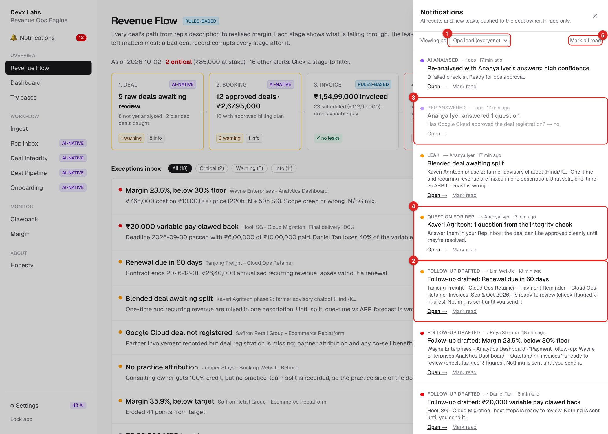
Figure 10.1 The notifications panel, viewing as Ops lead (everyone).
1Viewing as: pick a person or Ops lead (everyone).
2Follow-up drafted: the AI drafted a payment chase, change request or renewal note for a new leak; sent to the deal owner. Open → goes to the Dashboard.
3Rep answered: a rep sent answers from the Rep inbox; sent to ops. Faded = already read.
4Question for rep: the AI has questions about a rep's deal; sent to that rep. Open → goes to their Rep inbox.
5Mark all read (shared for everyone; Mark read does one).
Type
Meaning
Goes to
AI ANALYSED
A deal was analysed (or re-analysed with a rep's answers) and is ready for review.
Owner / ops
QUESTION FOR REP
The AI needs answers before the deal can be approved cleanly.
The rep
REP ANSWERED
The rep answered; shows each question → answer.
Ops
BRIEF DRAFTED
An onboarding brief is ready to review and approve.
Owner
FOLLOW-UP DRAFTED
A follow-up message was drafted for a new leak; review it in Diagnose. Nothing is sent.
Owner
LEAK
A new critical or warning leak (each leak once).
Owner
AI PAUSED
An automatic AI step could not run or was paused at the reserve; do it manually.
Owner / ops
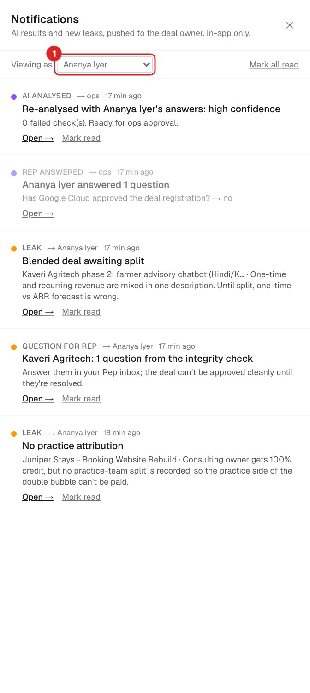
Figure 10.21: Viewing as Ananya Iyer shows her items plus ops items, in order: the re-analysis, her answer, the "Blended deal awaiting split" leak, the original "Kaveri Agritech: 1 question" and a Juniper Stays attribution leak.
The leak scan (and with it the automatic follow-up drafting) runs whenever the notification list refreshes (every 15 seconds while the app is open) and once a day. Notifications are in-app only; no email or Slack.
Follow-up drafts in Diagnose
When "Draft follow-ups for leaks" is on, a new clawback risk, missed deadline, margin below the floor or renewal due gets a follow-up drafted automatically, once per leak (at most 3 per scan). Open the Dashboard and expand the leak group to see it inline. At the time of the screenshots there were three: Wayne (margin), Hooli SG (clawback) and Tanjong Freight (renewal).
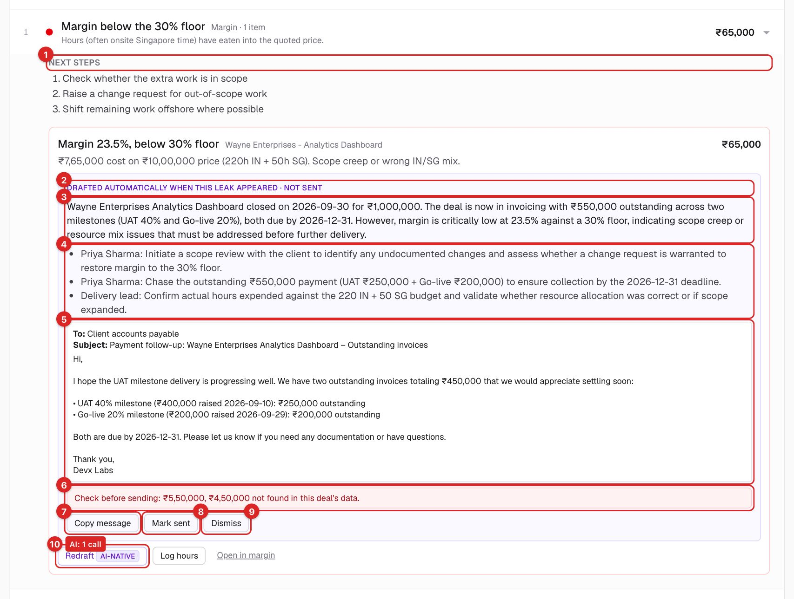
Figure 10.3 "Margin below the 30% floor" expanded, showing the follow-up drafted automatically for Wayne Enterprises.
1Next steps for this kind of leak (rules, no AI).
2"Drafted automatically when this leak appeared · not sent".
3Situation: a short summary of the deal and the problem.
4Steps, each with an owner.
5Email draft: To (a role, since contacts aren't stored), Subject and body.
6₹-figure check: code compares every ₹ amount in the draft with the deal's data. Here it warns "Check before sending: ₹5,50,000, ₹4,50,000 not found in this deal's data" (the draft quotes totals that don't match the invoices). When all figures match it says "✓ Every ₹ figure matches the deal's data".
7Copy message: copies To, Subject and body to your clipboard (no AI, nothing saved).
8Mark sent: records that you sent it yourself (saves; nothing is actually sent).
9Dismiss: hides the draft (saves).
10Redraft (was "Draft next step"): asks the AI again. Uses 1 AI call and asks you to confirm.
Always read before sendingThe AI writes the language; it can get figures wrong, as this real example shows. The ₹-figure check catches amounts that don't exist in the deal's data, but it does not check tone or wording.
Other Diagnose actions
Button
What it does
AI?
Analyse
Runs the integrity agent on an unchecked raw deal.
1 AI call
Draft brief
Drafts the onboarding brief for a deal with no billing plan.
1 AI call
Draft next step / Redraft
Drafts (or redrafts) a payment chase or change request (not sent).
1 AI call
Record payment
Opens Amount ₹ + Paid on; Save payment writes it.
No (saves)
Log hours
Opens Location + Hours + Date; Save hours writes it.
No (saves)
Mark registered
Confirms the partner deal registration (asks first).
No (saves)
Set practice split
Opens AI / Web / Cloud / Data %; save writes it.
No (saves)
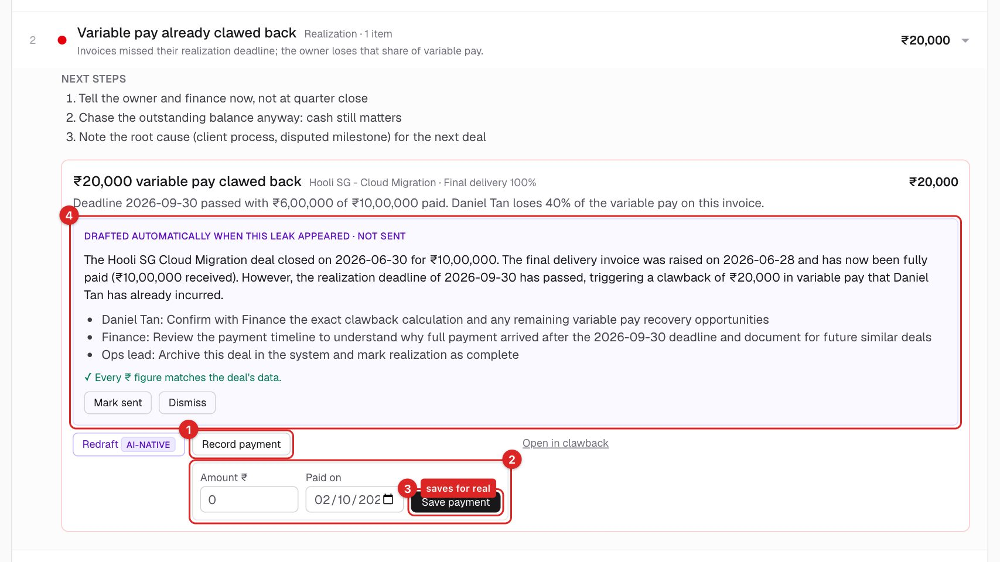
Figure 10.4 "Variable pay already clawed back" (Hooli SG) with the Record payment form open (not saved). 1: the button. 2: amount and date (pre-filled with the outstanding amount and today). 3: Save payment saves for real. 4: the follow-up drafted for this leak (here every ₹ figure matches; no email was needed, only steps).
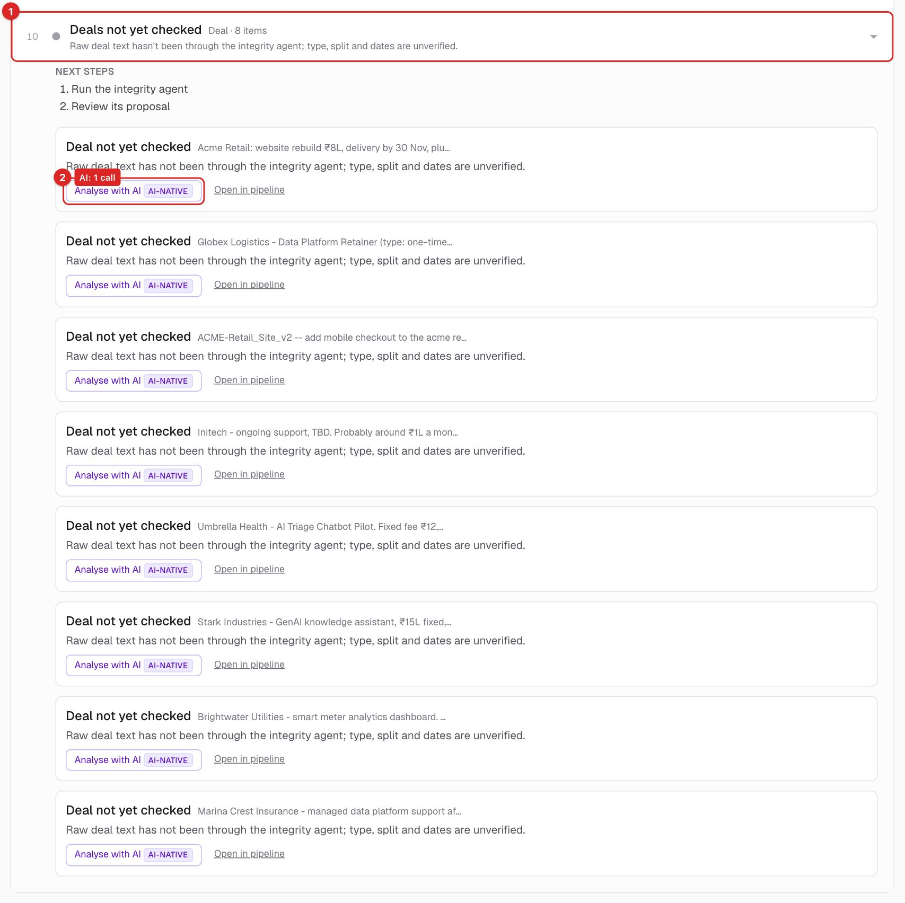
Figure 10.5 "Deals not yet checked". 1: the group, listing raw deals the AI hasn't read. 2: Analyse uses 1 AI call (asks to confirm).
Time travel: Dashboard and Clawback
Move the as-of date to see how deadlines and exposure will look later, assuming nothing more is paid. Nothing is saved.
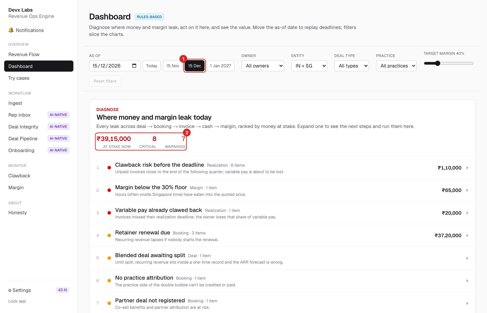
Figure 10.6 Dashboard as of 15 Dec 2026. 1: the 15 Dec preset. 2: Diagnose totals recalculated for that date.
On Clawback, type a date in As-of date or use the presets. A direct link also works, for example /clawback?asOf=2026-12-15.
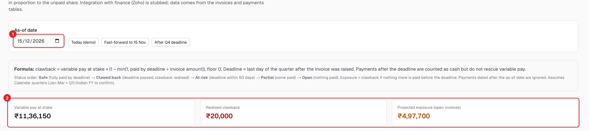
Figure 10.7 Clawback as of 15 Dec 2026. 1: as-of date. 2: totals for that date: ₹11,36,150 at stake, ₹20,000 realised, ₹4,97,700 projected exposure.
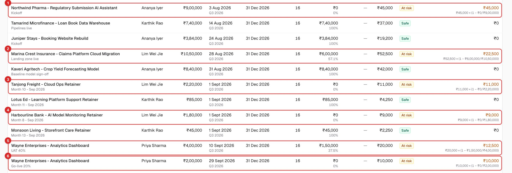
Figure 10.8 Q3 2026 invoices as of 15 Dec 2026: 16 days left to the 31 Dec deadline. 1–6: the six invoices now At risk (Northwind Pharma Kickoff, Marina Crest Landing zone, Tanjong Freight Month 10, Harbourline Bank Month 8, Wayne UAT 40% and Go-live 20%), each with its exposure if nothing more is paid. Paid invoices in between show Safe.
Margin what-if
Open Margin and find the deal's row.
Type extra hours in +IN or +SG under "What-if: extra hours" (Figure 3.14).
Read the new Margin % ("was …" shows the real value) and Status.
Click Clear what-ifs when done. What-ifs live only in your browser and are never saved.
Currency switch
On Settings, click SGD or USD under Display currency. Every ₹ amount on screen is re-shown at the fixed demo rate (1 SGD = ₹65, 1 USD = ₹84, as of 2 Oct 2026). Inputs and stored data stay in INR, and the choice applies only to your browser. Click INR to switch back.
Figure 10.9 The Dashboard with display currency set to SGD on the Settings page. 1: Diagnose totals now in S$. 2: each leak's amount also in S$.
Display currency is not deal currencyThe switch only changes how numbers are shown. If a deal itself is priced in S$ or USD, the AI does not convert it: it leaves the amount empty and asks the rep for the agreed INR value (see Chapter 5).
Chapter 11
End-to-end walkthrough
One messy deal, followed from text to margin. Part A is a sample you can paste yourself (it costs AI calls). Part B follows the real deal and seeded deals that are in the live data now, so you can open every screen without creating anything.
Part A: the sample deal to paste (Zephyr Logistics)
This text was tested end to end on an earlier version of the data. It is no longer in the live database; pasting it creates it fresh.
Zephyr_Logistics-DataPlatform (one-time??) — signed today. Phase 1: build their shipment-tracking data platform on AWS, fixed fee ₹18,50,000, go-live by 31 Jan 2027. After go-live they want managed analytics + on-call support at ₹1,20,000 per month for 12 months, billing from Feb. Co-sell with AWS: their partner manager says AWS will put ₹2,50,000 MDF towards the migration; deal registration submitted but not approved yet. Mostly our Data team, some Cloud. Delivery mostly offshore from Bangalore, with two onsite weeks in Singapore for cutover. Client wants 99.5% pipeline uptime and live dashboards for all 40 warehouses.
Ingest it. Ingest → Paste deal text, paste the text, owner Daniel Tan (SG), click Add to pending queue (Figure 4.1). Uses 1 AI call (auto-analysis).
Record 1: Zephyr Logistics - Data Platform Build, one-time, ₹18,50,000, close date 31 Jan 2027 (stated go-live).
Record 2: Zephyr Logistics - Managed Analytics & Support Retainer, recurring, ₹1,20,000 × 12, close date 1 Feb 2027, marked assumed (only "Feb" was given), so it becomes a question for the rep.
AWS flagged as co-sell, ₹2,50,000 MDF kept out of revenue, deal registration "no".
Answer as the rep in the Rep inbox (I am: Daniel Tan): first billing date 01/02/2027, and the partner question. Send triggers a re-analysis: 1 AI call.
Approve as ops in Deal Integrity with practice split Data 70 / Cloud 30 and your name. Saves; then auto-drafts 2 briefs = 2 AI calls.
Approve the briefs in Onboarding. The build's milestones become invoices totalling exactly ₹18,50,000; the retainer becomes 12 monthly invoices of ₹1,20,000 from 1 Feb 2027.
Log hours (Ingest → Quick form → Timesheets): 300 h India + 80 h Singapore. Cost = 300 × ₹2,000 + 80 × ₹6,500 = ₹11,20,000, margin 39.46% (just under the 40% target). Add 60 more Singapore hours (140 SG): cost ₹15,10,000, margin 18.38%, below the 30% floor: a critical alert appears, and with follow-ups on, a change-request draft is written for it (1 AI call).
Time-travel Clawback to 15 Mar 2027: the build's Q4 2026 invoices that are still unpaid show At risk for the 31 Mar 2027 deadline.
Budget for Part AAbout 4 to 6 AI calls in total (analysis, re-analysis, two briefs, possibly one follow-up). Check the calls left next to Settings first.
Part B: the same journey on live data
Stage
Live example and where to see it
1. Deal text in
Kaveri Agritech phase 2 (owner Ananya Iyer): "farmer advisory chatbot (Hindi/Kannada) build ₹18L, go-live 31 Mar 2027, then ₹75k/month model ops support for 12 months from 1 Apr 2027. Google Cloud co-sell, deal registration submitted but not approved yet."
2. AI asks the rep
The first analysis asked "Has Google Cloud approved the deal registration?" (notification "Kaveri Agritech: 1 question from the integrity check", Figure 10.2).
3. Rep answers
Ananya answered "no" in the Rep inbox; the deal re-analysed to high confidence and now sits in Waiting for ops approval (Figure 5.2).
4. Ops reviews
Deal Integrity shows 2 records (₹18,00,000 one-time ending 31 Mar 2027; ₹75,000 × 12 from 1 Apr 2027), Google Cloud co-sell, registered = no, all checks passed (Figures 6.1, 6.2, 6.5). On the board it is in Needs review (Figure 3.9). Approving it is the next real step.
5. Brief and invoices
Saffron Retail Group - Ecommerce Replatform: approved brief, four invoices summing exactly to ₹36,00,000 (Figure 7.3).
6. Cash and clawback
Hooli SG: ₹20,000 variable pay already clawed back (Figure 10.4). Wayne Enterprises UAT 40%: partial payment, ₹12,500 exposure (Figure 3.12), At risk by 15 Dec (Figure 10.8).
7. Margin
Wayne Enterprises: 220 h IN + 50 h SG = ₹7,65,000 cost on a ₹10,00,000 price, margin 23.5%, below the 30% floor; +20 SG what-if → 10.5% (Figure 3.14). Saffron: 35.9%, below the 40% target.
8. Follow-up
The Wayne margin leak got an automatic follow-up draft, with a ₹-figure warning to check before sending (Figure 10.3).
9. Attribution
Practice credit by split (Figure 3.4); Juniper Stays has no practice split, so it shows as an attribution leak.
Chapter 12
Troubleshooting and FAQ
I see "AI unavailable: manual entry". What happened?
The AI could not run. Common reasons: the 100-call budget is used up ("budget_exhausted"), the API key is missing ("not_configured"), the AI declined or returned something that failed the format check ("refusal", "invalid_output", "truncated"), or a network or API error. Nothing is guessed. What to do: fill in the records (Deal Integrity) or the brief (Onboarding, pre-filled with a 40/40/20 template or a monthly schedule) yourself. The same checks and approval apply.
The AI calls are running out.
When the calls left reach the AI reserve (default 5, set on Settings), all automatic AI steps stop on their own and you get a notification such as "Auto-analyse paused: AI reserve reached"; manual AI buttons still work until 0. At 0 every AI button falls back to manual entry. Save calls by: not re-analysing after answering questions (answers already fill the fields), not restarting AI Try cases, and using Write manually in Onboarding. Only the demo owner should change the switches.
Where did the automation switches, currency and AI meter go?
They moved from the sidebar to the ⚙︎ Settings page (Figure 2.3). The sidebar keeps a small badge next to Settings with the calls left.
I'm a rep. Where do I answer questions?
In the Rep inbox: pick your name in "I am" and look under Needs your answers. The 🔔 "Question for rep" notification links straight there. Ops can also answer on your behalf in Deal Integrity.
My deal says "The integrity agent is reading this deal…" for a long time.
It has not been analysed. Either automation is off or paused at the reserve, the upload had more than 5 deals, or the deal came from the demo seed (which never runs AI). Ask ops to click Analyse with AI in Deal Integrity (1 AI call).
What is a "follow-up draft", and was it sent?
No, nothing is ever sent. When a serious leak appears (clawback risk, missed deadline, margin below floor, renewal due), the AI drafts the message a person would send and shows it in Diagnose. Read it, check the ₹-figure warning, Copy message into your own email, then click Mark sent (or Dismiss).
I'm locked out / the passcode doesn't work.
Type devx-revops-2026 exactly: lower case, two hyphens, no spaces. If the page keeps returning to the passcode box, your browser may be blocking cookies for the site; allow them or try a normal (not private) window. Lock app signs you out on purpose.
Why are the numbers in S$ or US$?
Someone (maybe you) switched Display currency to SGD or USD on the Settings page in this browser. It is display only, at fixed demo rates; switch back to INR. All inputs and stored data are always INR.
My deal is priced in S$ or USD. Why is the amount empty?
On purpose. Amounts in another currency are never converted by the AI or the code. The record is created with an empty amount and the rep is asked: "What is the agreed INR amount? (No currency conversion is assumed.)" Answer with the INR figure agreed with finance.
Why is a deal in this column on Deal Pipeline?
Columns are worked out from the data, never set by hand: Intake = raw text not analysed; Needs review = analysed, not approved; Booked = approved but no approved brief and no invoices; Onboarded = billing plan set but nothing raised yet; Invoicing = some invoices raised, cash outstanding; Collected / Live = everything raised so far is paid. To move a card, do the next thing on its "Next:" line.
What does "added by checks" mean?
The AI assumed something (for example a date it was not told, or an unknown partner registration) without asking. Code spotted the assumption and added the question itself, so assumptions cannot reach the books unnoticed. Similarly, a label-conflict note that starts with "(Added by checks)" means the rep labelled the deal one-time but the terms include monthly billing, and the AI did not explain the change, so the code added the explanation.
What does "capped by checks" mean?
The AI rated its own confidence higher than the code checks allow (for example because a date was assumed). The code lowered it. The badge always shows the lower, safer value.
Why is Approve greyed out?
One of: no name in Approved by; a record has a red error; the practice split does not total 100%; or an acknowledgement tick is needed ("I reviewed the failed checks above" or "I accept N open questions unanswered"). In Onboarding: validator flags are red, or no name.
My CSV says "missing required column" or every row is red.
Download the template for the same target table and copy your data into it. Check dates are YYYY-MM-DD, locations are IN or SG, and deal names match an approved deal exactly (the Quick form's dropdown shows the exact names).
Approving a brief didn't create invoices.
The deal already had invoices, so the platform skipped creating new ones to avoid double billing (an amber note says so). Reconcile the existing invoices by hand.
How accurate is the AI?
See Honesty → AI accuracy (eval) (Figure 3.16): on a small held-out set of 6 invented deals, 0 silent errors, 5/6 fully correct, and the one wrong case was caught. The sets are small and invented, so treat this as evidence the checks work, not as a guarantee.
How do I start fresh?
Go to Ingest.
Click Reset and confirm "Delete ALL rows in every table?". This affects everyone.
Click Load demo data. No AI is used.
To restart only one scenario, use Restart case on Try cases instead: it reloads just that case's clients (and, for AI cases, re-runs the analysis).
Chapter 13
Glossary
Blended deal
One description that mixes one-time work and recurring work (for example a build plus monthly support). The platform splits it into separate records so recurring revenue is not booked as one-time.
One-time vs recurring
One-time: a fixed fee for a project, stored as a total. Recurring: a monthly amount for a number of months (a retainer), stored as monthly amount × term. ARR (annual recurring revenue) = monthly × 12.
Close date rule
For a one-time record the close date is the project end (go-live); for a recurring record it is the first billing date. If the text only gives a month, the date is assumed and turned into a question for the rep.
Booking vs invoicing vs realization
Booking: an approved deal record (contracted value). Invoicing: billing milestones raised as invoices. Realization: cash actually collected against those invoices, before the deadline.
Clawback
If an invoice is not fully paid by the end of the quarter after it was raised, the owner loses the matching share of the variable pay tied to it (variable pay at stake = an invented 5% of the invoice). Clawback = at stake × (1 − paid by deadline ÷ invoice amount). "Exposure" is the clawback that would happen if nothing more is paid; "at risk" means the deadline is within 60 days.
Double bubble
Credit for invoiced revenue goes 100% to the consulting owner and to the practice teams by their split, so total credit is about twice the revenue by design. A deal with no practice split is an attribution leak.
Practice split
How the practice credit is shared across AI, Web, Cloud and Data; must total 100%.
MDF
Market Development Funds: money a partner (for example AWS) contributes towards a deal. It is partner funding, not revenue, so it is kept out of deal amounts and tracked as something to claim.
Deal registration
Registering a co-sell deal with the partner so the partner attribution and benefits apply. Unregistered partner deals raise a warning.
Co-sell
Selling a deal together with a partner such as AWS, Microsoft or Google Cloud.
Blended rate
The average hourly delivery cost across India and Singapore hours: (IN hours × ₹2,000 + SG hours × ₹6,500) ÷ total hours.
Margin floor / target
Margin % = (price − delivery cost) ÷ price. Below the 30% floor is a critical warning; the target (plan, default 40%) is what the deal should make. Erosion = target − actual.
Rep inbox
The page where a sales rep sees what the AI understood from their deals and answers its questions. Answers are written into the deal, saved with the rep's name, and trigger an automatic re-check.
Read-back
The plain-language summary in the Rep inbox of what the AI understood ("One-time project … for ₹18,00,000, ending 31 Mar 2027"), with "(assumed)" where it guessed.
Follow-up draft
A message (payment chase, change request or renewal note) the AI drafts automatically when a serious leak appears. Shown in Diagnose with a ₹-figure check; never sent by the platform.
₹-figure check
Code that compares every ₹ amount in an AI-written message with the deal's real data and lists any that don't match.
Added by checks
A question or note the code added because the AI assumed something without saying so (an assumed date, unknown registration, an unexplained label override).
Foreign-currency flag
When a deal mentions S$, SGD, USD or $, the amount is never converted; the record's amount is left empty and the rep is asked for the agreed INR amount.
Validator / checks
Plain code that re-checks every amount, date, type, name and partner field the AI proposes, and every billing milestone. Failed checks force low confidence or block approval.
Silent error
An AI proposal that is wrong but looks clean (no flag, not low confidence, no question), so a human could approve it. The eval's headline metric.
AI reserve
The number of AI calls kept back for manual use; automation pauses when only this many are left (default 5, set on Settings).
As-of date
A "time machine" date on Dashboard and Clawback. Shows what deadlines and exposure would look like on that date; payments after it are ignored. Nothing is saved.
AI call
One request to the AI. The project has a hard cap of 100, shared by everyone.